"Atlas Virtuel de la Lune Pro"
Documentation utilisable pour le module ATLUN (c)
Decembre 2009
Bienvenue dans " L'atlas virtuel de la Lune Pro".
En temps qu'astronomes amateurs nous-mêmes, nous continuons de perfectionner l'AVL pour concevoir un logiciel toujours plus utile pour les observateurs de la Lune et plus pratique pour une utilisation sur le terrain. Nous essayons toujours de définir des fonctionnalités et une interface les plus conviviales possibles et intuitives.
L' "Atlas Virtuel de la Lune" est à ce jour disponible en 7 versions :
- La version "Light" utilisable
sur les ordinateurs Windows avec des configurations matérielles peu puissantes
présentant un affichage en 2D.
- La version "Expert"
utilisable sur les ordinateurs Windows avec des configurations matérielles moyennement
puissantes et présentant les faces visibles et cachées
avec les librations.
- La version "Pro"
utilisable sur les ordinateurs Windows avec des configurations puissantes avec les fonctions
"Expert" plus les textures haute résolution , les couches scientifiques, le bi-fenêtrage,
l'affichage "plein écran" et les ombres dynamiques sur le
terminateur..
- La version "Pro" utilisable sur les ordinateurs Linux avec des configurations puissantes avec les fonctions "Expert" plus les textures haute résolution , les couches scientifiques, le bi-fenêtrage, l'affichage "plein écran" et les ombres dynamiques sur le terminateur..
- La version "Pro" utilisable sur les ordinateurs Apple Mac avec des configurations puissantes avec les fonctions "Expert" plus les textures haute résolution , les couches scientifiques, le bi-fenêtrage, l'affichage "plein écran" et les ombres dynamiques sur le terminateur..
- La version "Pocket / Windows Mobile" : version similaire à la version "Light" et utilisable sur les Pocket PC avec Windows Mobile .
Ces six versions sont téléchargeables gratuitement à partir du site Web de l'AVL. toutes ces versions peuvent être complétées par les nombreuses bibliothèques d'images également téléchargeables gratuitement du site Web de l'AVL.
- Les versions "Pro CD" que vous pouvez commander à partir du site Web de l'AVL si vous n'avez pas uneconnexion Internet rapide. ou si vous préférez une présentation pratique. Ces versions sont utilisables avec des configurations puissantes. Le CD contient une des trois versions Windows ou Linux ou Mac/Os selon votre commande avec un programme d'installation, plus les textures « Haute Résolution » et plusieurs bibliothèques d'images (LOPAM, Apollo, Apollo Mapping, LAC / LM, Clementine et Consolidated Lunar Atlas).
Cette version CD peut être complétée avec les textures "Très Haute Résolution" et d'autres bibliothèques d'images (Best of Amateurs and Kaguya) également téléchargeables gratuitement du site Web de l'AVL.
Un manuel est nécessaire pour découvrir l'ensemble des possibilités du logiciel toujours plus nombreuses. Nous vous conseillons de le lire attentivement en vous exerçant en même temps au maniement des fonctions décrites.
Le présent manuel présente uniquement l'ensemble des fonctionnalités de la version Pro.
Bonne utilisation et nous espérons que vous apprécierez ce programme et le recommanderez autour de vous.
Merci beaucoup pour votre confiance.
Christian Legrand & Patrick Chevalley
LES MODULES DE L'ATLAS VIRTUEL DE LA LUNE VERSION « PRO »
L' "Atlas Virtuel de la Lune" version « Pro » comporte à ce jour 4 modules :
-
Le module "ATLUN" (c) : c'est le module de
cartographie qui est le module de base de l'AVL présent
dans toutes les versions avec quelques variantes. Ce manuel décrit
ses fonctionnalités.
- Le module
"DATLUN" (c) : c'est le module de gestion des
bases de données qui possède des fonctions de tri
particulièrement puissantes. Il ne figure que dans la
version "Pro".
- Le module "PHOTLUN"
(c) : c'est le module de gestion des bibliothèques d'images
qui possède des fonctions de traitement particulièrement
puissantes. Il ne figure que dans la version "Pro".
-
Le module "POCKETLUN" (c) : c'est la
transposition du module ATLUN pour les PDA / Pocket PC fonctionnant
pour Windows Mobile.
L'ÉCRAN PRINCIPAL DU MODULE ATLUN

Ecran ATLUN bifenêtre sur moniteur 16:9 / 22"
L'écran du module "ATLUN" (c) tient dans une fenêtre "Windows". Comme toute les fenêtres Windows, vous pouvez minimiser, ou maximiser ou adapter sa taille en cliquant sur les boutons à droite de la barre des titres.
Dans la version "Pro", il est possible d'ouvrir simultanément deux fenêtres de cartographie, la fenêtre voisinage et les modules DATLUN (c) et PHOTLUN (c).
Cette fenêtre comporte :
- La barre
des menus et des boutons
- La fenêtre "Carte" pouvant être coupée en deux
sous-fenêtres comme ci-dessus
- Les onglets
"Information", "Ephémérides", "Notes", "Outils","Réglages"
et "Terminateur" avec leurs fenêtres associées
- La barre de
statuts
LA BARRE DES MENUS ET DES BOUTONS

Cette barre comporte des menus donnant accès à des liste de fonctions et des boutons permettant un accès direct et rapide à certaines de ces fonctions.
LE MENU "FICHIER"

Traditionnel dans tous les logiciels Windows, il
sert dans l' « Atlas Virtuel de la Lune » à
sauvegarder des images, à configurer l'impression, à
lancer le freeware de Patrick Chevalley "Cartes du ciel"
s'il est installé sur votre ordinateur et à quitter
le programme.
FONCTION "Base de données"
Cette fonction vous permet, d'ouvrir une fenêtre contenant le module de gestion des données DATLUN.
FONCTION "Copie de la carte / Snapshot"
Cette fonction vous permet, d'ouvrir une fenêtre contenant une capture de la carte de la fenêtre carte. Vous pouvez ainsi comparer cette capture avec une nouvelle configuration appliquée à la fenêtre carte.
FONCTION "Enregistrer sous "
Cette fonction vous permet, d'enregistrer soit au format "jpg", soit au format "bmp", le contenu de la fenêtre "Carte".
FONCTION "Sélection d'imprimante"
Cette fonction vous permet, via la fenêtre standard de sélection de Windows, de choisir votre imprimante et de la configurer.
FONCTION "Impression"
Cette fonction vous permet d'imprimer les documents choisis dans le menu des documents à imprimer (Carte, éphémérides et / ou fiche d'information).
FONCTION "Cartes du Ciel"
Cette option vous permet de lancer "Carte du ciel", le freeware plnétarium de Patrick Chevalley afiin de pouvoir déterminer la position de la Lune par rapport aux étoiles et à l'horizon. Elle est destinée à vous permettre des recherches d'occultation d'étoiles, notamment.
FONCTION "Quitter"
Cette fonction permet de quitter l'atlas en fermant tous les fichiers ouverts.
LE MENU "CONFIGURATION"
Ce menu permet d'ajuster différents paramètres de l'AVL. Il comporte 8 onglets.
ONGLET "Général"

Coordonnées de l'observatoire
En activant la coche "Position
géocentrique", vous verrez le globe lunaire tel
qu'il vous apparaîtrait si vous étiez positionné
sur la ligne joignant le centre de la Lune au centre de la
Terre.
Mais le logiciel peut tenir compte des coordonnées
du site d'observation pour afficher le globe lunaire en temps réel
et en 3D en tenant compte de la libration dite "diurne".
Pour
cela, il vous faut désactiver la coche "Position
géocentrique" et afficher la latitude et la
longitude de votre lieu d'observation grâce aux cases
incrémentables situées dans le cadre. Entrez aussi
le décalage horaire par rapport à l'heure de
Greenwich, en tenant compte de l'heure d'été
éventuellement dans le champ "Zone horaire".
Cadre "Date / Heure"
Le cadre "Date / Heure" vous permet de préciser l'heure et la zone horaire à utiliser.
En cochant la case "Utilise l'heure et la zone horaire de l'ordinateur" pour que l'AVL utilise l'horloge interne de votre ordinateur comme référence.
Si vous ne cochez pas la case, vous pouvez spécifier la zone horaire à utiliser avec la case à saisir spécifique qui s'affiche alors.
Liste déroulante "Langues"
La liste déroulante "Langue" vous permet de choisir le langage utilisé par le logiciel et la base de données. Dans la version de base, le Français et l'Anglais sont disponibles. Vous pouvez télécharger ensuite à partir du site AVL / VMA les traductions des mots et expressions utilisés dans les menus. La page des traductions du site AVL / VMA vous indiquent également si des traductions de la base de données sont disponibles.
ONGLET "Bases de données"

Cases à cocher "Bases de données "
Les cases à cocher "Bases de données" vous permettent d'indiquer au logiciel quelles sont les bases de données que vous souhaitez utiliser. Moins il y a de cases de données cochées, plus rapide sera l'affichage. Au total lorsque toutes les bases de données sont sélectionnées, le logiciel doit gérer plus de 9000 fiches
Christian Legrand a réalisé à ce jour 7 bases de données complètement ou partiellement renseignées :
- Formations nommées de la face visible (1100
entrées environ)
- Cratères indicés de la
face visible (5300 entrées environ)
- Formations nommées
de la face cachée (650 entrées environ)
-
Cratères indicés de la face cachée (1200
entrées environ)
- Sites historiques des deux faces (50
entrées environ)
- Dépôts pyroclastiques
(100 entrées environ)
- Dômes
volcaniques / ALPO (700 entrées environ)
La coche « Enlever les valeurs inconnues des rapports» permet d'avoir des rapports avec seulement les formations complètement renseignées.
Le cadre « Bases de données personnelles de DATLUN» vous permet d'inscrire les chemins d'accès des bases de données personnelles que vous souhaitez lier à ATLUN et DATLUN. Attention, ces bases doivent être au format « csv » et posséder le mêmes champs que les bases développées pour l'AVL par Christian Legrand.
De nouvelles bases de données sont en préparation et verront la création de leur case à cocher dans cet onglet au fur et à mesure des nouvelles versions.
ONGLET "Affichage"

Cases à cocher d'affichage
L'activation de la case à
cocher "Afficher la phase" fait apparaître
une zone de pénombre sur le globe lunaire dont la limite
suit le terminateur correspondant à la date et à
l'heure réglée par l'utilisateur (Voir "Onglet
Ephémérides"). Les caractéristiques
de cette pénombre sont réglables (Voir "Onglet
réglages").
L'activation de la case à
cocher "Afficher la libration" fait tourner
légèrement le globe lunaire affiché pour
qu'il présente son aspect tenant compte de la libration
calculée à la date et à l'heure réglée
par l'utilisateur (Voir "Onglet
Ephémérides").
L'affichage de la
libration tient compte de la libration en latitude due à
l'inclinaison de l'orbite de la Lune et de la libration en
longitude due à la vitesse variable de la Lune sur son
orbite elliptique. De plus, si vous avez choisi de rentrer les
coordonnées de votre site d'observation, le globe lunaire
affiché tient également compte de la libration
diurne (Voir "Coordonnées
du site d'observation").
Couleurs
En cliquant sur les petits carrés initialement de couleur verte, jaune et rouge, vous pouvez changer la couleur des marques, du nom de la formation "identifiée" et des "labels" appliqués aux autres formations s'affichant sur la carte.
Labels et marques
La case à cocher "Marque la libration maximum" sert à afficher une flèche sur le limbe du disque lunaire à l'endroit où la libration est maximale.
En activant les cases à cocher "Affiche les labels" et/ou "Affiche les marques", vous affichez le point montrant la formation choisie, le nom officiel de celle-ci et les noms des autres formations visibles sur la carte.
Vous pouvez choisir de centrer, ou de décaler àdroite d'un point central droite le nom des formations, en utilisant la case "Label centré sur la formation".
La case "Label court" sert à diminuer l'encombrement de l'affichage qui risque de subvenir si vous utilisez la base de données des cratères indicés. Si vous cochez cette case, les noms des cratères "indicés" seront ramenés à leur indice. Exemple : "ERATOSTHENES A" sera affiché "A". Mais en cliquant dessus, il sera de nouveau identifié comme "ERATOSTHENES A".
Deux curseurs "Taille des labels" et "Densité des labels" vous permettent de régler d'une part, la taille des noms affichés sur la carte et d'autre part le nombre de noms affichés simultanément dans la fenêtre de la carte. Il vous sera sans doute nécessaire de procéder à plusieurs ajustements pour trouver le bon compromis. Ces deux curseurs sont également utilisés pour régler l'impression des cartes puisque la carte imprimée est le reflet exact de la carte affichée dans la fenêtre.
ONGLET "Textures"

Cet onglet présente une matrice de sélection des textures en fonction du niveau de zoom appliqué. Cette fonctionnalité rend extrêmement souple l'affichage des textures.
Vous pouvez ainsi choisir de garder une seule des quatre textures proposées sur la totalité du zoom ou sélectionner comme ci-dessus un changement progressif de résolution des textures en fonction du niveau de zoom.
Il suffit de cocher le bouton radio souhaité. Il ne peut y avoir qu'une seule texture cochée par niveau de zoom.
Il est conseillé d'utiliser des textures avec une résolution augmentant au fur et à mesure que le niveau de zoom augmente. C'est la solution choisie dans l'exemple ci-dessus.
La texture "Clementine photographique" est un peu à part puisqu'elle sert à montrer l'aspect des formations sous l'éclairage solaire le plus haut possible.
Les cases à cocher "matricielles" permettent de choisir les textures haute définition. Les captures d'écran ci-dessous vous montrent le cratère Alphonsus au zoom maximum pour comparaison. Quatre textures sont disponibles :
- "Aérographe avec albedo"
Dessin à l'aérographe avec des nuances d'albédo réalisé à partir des clichés de la sonde Clémentine avec ombre portée uniforme par David Seal du JPL et son équipe. La résolution maximale "Entière" correspond à celle de la surface de la Lune telle qu'elle est visible dans un instrument de 120 mm.

- "Aérographe sans albedo"
Dessin à l'aérographe sans nuances d'albédo réalisé à partir des clichés de la sonde Clémentine avec ombre portée uniforme par l'équipe du United States Geological Survey / USGS . La résolution maximale "Entière" correspond à celle de la surface de la Lune telle qu'elle est visible dans un instrument de 150 mm.

- "Clementine Photographique"
Mosaïque des photographies originales de la sonde Clementine réalisée par le professeur Mark S. Robinson, avec son équipe de la "Northwestern University", copyright USGS / Astrogeology.. Cette texture atteint une définition de 500 m / pixel. C'est la "texture avec albédo" la plus précise disponible à ce jour dans les logiciels de cartographie lunaire. C'est aussi la seule montrant les formations sous un éclairage le plus vertical possible, donc sans ombres.

Note importante : Cette texture a été produite à partir des
données de la sonde Clémentine traitées par l'USGS. Ce travail
remarquable, compte tenu des difficultés rencontrées a pu induire
des distorsions dans les formations au bord des plaques assemblées.
Ainsi, la position de certaines d'entre elles peut être légèrement
décalées par rapport à leur emplacement réel. Nous vous suggérons
de confirmer cette position avec la texture aérographe.
- "Lunar Orbiter Photographique VHR" Mosaïque des photographies originales des sondes Lunar Orbiter 1, 2, 3, 4 et 5 à partir des données de l'USGS, copyright USGS. Dans la présente version "Pro", cette texture possède une résolution variable atteignant 200 m / pixel aux meilleurs endroits. C'est la "texture avec relief ombré" la plus précise disponible à ce jour dans les logiciels de cartographie lunaire.

Note importante : Cette texture a été construite à partir des images originales des Lunar Orbiter qui ont été partiellement "dérayées", redimensionnées et orientées par l'équipe de l' USGS. Il s'agit là d'un travail remarquable vu la somme de difficultés qui a du être rencontrées. Ce traitement des images plutôt "lourd" peut avoir introduit des déformations et des distorsions à la limite de chaque plaque assemblées. De même, certaines formations peuvent se retrouvées très légèrement déplacées par rapport à leur position réelle. Nous vous suggérons de confirmer l'aspect et la position exacte d'une formation sur laquelle vous souhaitez mener une étude précise en utilisant aussi la texture "aérographe".
Les deux cases alternatives à cocher "Phase avec relief" et "Phase sans relief" servent à choisir l'activation ou non de l'affichage dynamique des ombres au niveau du terminateur :

Phase sans affichage dynamique des ombres au terminateur

Avec affichage "normal" dynamique des ombres au terminateur
Le choix entre les cases à cocher "Simple" et "Avancé" augmente ou diminue l'étendue de l'affichage dynamique des ombres sur le terminateur.
Cette nouvelle option donne une vue plus réaliste, mais ne permet pas des niveaux de zoom élevés.
La texture "Ombres dynamiques Kaguya" téléchargeable depuis le site Internet de l'AVL donne une vue encore plus réaliste et peut réellement être comparée à la vue à l'oculaire.

Phase avec la texture "Kaguya dynamic shadows" appliquée au terminateur

Champ oculaire avec la texture "Kaguya dynamic shadows" appliquée au terminateur
Vous ne rêvez pas, Ceci est bien une vue générée par ordinateur et non pas une image numérique prise à l'oculaire d'un instrument !
ONGLET "Couches"

La version "Pro" de l'AVL comporte la possibilité d'appliquer au dessus de la texture choisie dans l'onglet "Textures", une couche dont on peut régler la transparence pour continuer à voir en dessous la texture employée. Ces couches sont des cartes de transposition de données scientifiques issues des missions spatiales Clementine et Lunar Prospector, mais aussi des couches de couleurs et enfin, la carte géologique de l'ensemble du globe lunaire. Cette technique permet de montrer pour chaque formation lunaire, sa relation avec les données scientifiques disponibles.
Case "Voir la couche"
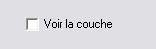
L'activation de la case "Voir la couche" permet d'afficher au dessus de la texture sélectionnée la couche choisie grâce à la liste déroulante ci-dessous.
Liste déroulante"Couches"
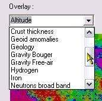
En cliquant sur la case fléchée de la liste déroulante, celle-ci se déroule et vous permet de choisir celle dont vous avez besoin. Elles sont repérées par leur nom en anglais. Nous avons traduit celui-ci ci-dessous pour vous faciliter le choix.Voici la présentation des listes actuellement associées à l'AVL. Nous ajouterons les nouvelles couches en téléchargement sur notre site dès qu'elles seront disponibles. Vous trouverez :
- des couches de textures
- des couches de
colorisation
- une couche géologique
- des couches
topographiques
- des couches de répartition d'éléments
-
des couches de relevés d'émissions neutroniques
Présentation des couches « Couleurs et albedos »
Couche "Albedo""

Cette couche permet d'ajouter l'albedo de la surface lunaire à la texture « Aérographe sans albedo »qui ne le prend pas en compte, permettant ainsi de rendre encore plus "réelle" la vue sur l'écran. Il n' y a pas de légende spécifique puisqu'il s'agit d'un simple traitement d'image.
Couche "Couleurs réelles / Real colors"

Cette couche essaie de représenter la couleur la plus réelle possible du globe lunaire. Elle est reconstituée à partir des couleurs des clichés de Clementine équilibrés dans les 3 canaux RGB. Il n' y a pas de légende spécifique puisqu'il s'agit d'un simple traitement d'image.
Couche "Couleurs exagérées / Enhanced colors"

Cette couche a été obtenue en augmentant au maximum le contraste en les trois couleurs spectrales. Il n' y a pas de légende spécifique puisqu'il s'agit d'un simple traitement d'image. Elle fait apparaître de subtiles répartitions dans les zones rocheuses et notamment les différents écoulements de lave dans les mers.
Couche "Rapport de couleurs / Clementine color ratio"

Cette couche a été obtenue en récupérant les cartes du site "PDS Map A Planet" établie à partir des images de la sonde "Clementine". Les variations de couleurs trahissent les variations de composition de la surface lunaire.
Les vues de la Lune "UVVIS Ratio" ("fausses couleurs") de Clementine ont été créées en utilisant 3 des 5 bandes passantes des caméras UVVIS de la sonde Clementine et en les combinant en couleurs primaires rouge, verte et bleue d'une image en couleurs:
|
Couleur |
Bande passante |
|---|---|
|
Red |
750 nm/415 nm |
|
Green |
750 nm/950 nm |
|
Blue |
414 nm/750 nm |
L'image en couleurs produite met en valeur des différences de couleurs en relation avec la minéralogie du sol. Les hautes terres lunaires, la plupart du temps d'anciens rocs d'anorthosite gabbroïqule (~4,5 milliards d'années), sont montrés avec du rouge (les plus vieux) et du bleu (les plus jeunes). les mers lunaires (de ~ 3,9 à ~1 milliards d'années), la plupart du temps des matériaux basaltiques riches en fer avec des teneurs en titane variables, sont montrés en jaune / orange (riche en fer et pauvres en titane) et en bleu (riche en fer et entitane). En surimpression sur ces unités géologiques de base, on trouve les matériaux des bassins et des cratères d'âges variés, se déclinant en rouge sombre et en bleu pour les anciesn bassins et jusqu'aux rayonnements de cratères en bleu (e.g., Mcewen et al., 1999; Pieters et al., 1999).
Présentation des couches « Caractéristiques physiques »
Couche "Température de la surface / Surface temperature"


Cette couche est réalisée
à partir de données récupérées
sur Internet. Elle permet de visualiser la température au
niveau de la surface lunaire, en étant tourné vers
la Soleil, celui-ci étant au plus haut point possible dans
le ciel lunaire au cours de la lunaison. La légende montre
que les température s'échelonnent de 240 (-33 °C)
au niveau des pôles jusqu'à 400 °K (127 °C) à
l'équateur.
Couche "Altitude Clementine / Altitude"


La légende des couleurs est en pieds (1 pied / feet = 0,33 m). Il faut donc diviser le nombre indiqué par 3 pour avoir l'altitude en mètres. La colonne de gauche est basée sur la répartition uniforme de la couleur, alors que celle de droite est basée sur la répartition uniforme des altitudes.
Cette couche est réalisée à partir des données altimétrique enregistrée par la sonde Clementine et compilées par Maria Zuber et son équipe du LPI. Elle permet de situer les altitudes relatives des différentes formations. Elle a mis notamment ainsi en évidence l'existence du grand bassin d'impact "South Pole / Aitken" au Sud de la Face Cachée.
Couche "ULCN 2005"

Cette couche est réalisée à partir d'une compilation de données altimétrique enregistrée par les missions Apollo, les sondes Clementine et Lunar Prospector et des mesures réalisées depuis la Terre, notamment avec des radiotélescopes en mode radar et mises en ligne sur le site de l'USGS par Brent Archinal et son équipe . Elle permet de situer les altitudes relatives des différentes formations.
Il est recommandé d'utiliser cette couche avec la texture « Aérographe sans albédo ». Il n'y a pas de légende des couleurs disponible pour cette couche.
Couche "Altitude Kaguya / Kaguya Altitude"


Cette couche est réalisée à partir des données altimétrique enregistrée par la sonde japonaise Kaguya et mises en ligne par l'équipe de la JAXA. Elle permet de situer les altitudes relatives des différentes formations. C'est la planisphère altimétrique lunaire la plus détaillée du moment. Les légendes en japonais ont été laissées ainsi que la grille des coordonnées.
Il est recommandé
d'utiliser cette couche avec la texture « Aérographe
sans albédo ».
Couche "Altitude Kaguya 2 / Kaguya Altitude 2"

Cette couche est réalisée à partir des données altimétrique enregistrée par la sonde japonaise Kaguya et mises en ligne par l'équipe de la JAXA. Elle permet de situer les altitudes relatives des différentes formations. C'est la planisphère altimétrique lunaire la plus détaillée du moment.

La légende des couleurs est en m d'altitude.
Présentation des couches « Géologie et gravité »
Couche "Géologique / Geological"

Cette couche est réalisée à partir des données disponibles sur le site de l'USGS "Astrogeology / Webgis" et rassemble les différentes cartes géologiques de la Lune réalisées. Les couleurs sont fonction des périodes de formation des formations. Les formations en jaune vif sont de « l'Ere Copernicienne » et sont les plus récentes.
Puisque chacune des cartes primaires a sa propre légende, la légende globale difficile à concevoir n'est pas disponible pour le moment. Il est recommandé d'utiliser cette couche avec la texture « Aérographe sans albédo »
Couche "Types de roches / Rocks types"

Cette couche est réalisée
à partir des données orbitales enregistrées
par la sonde Clementine et compilées par le Dr Maria T.
Zuber et son équipe de l'USGS. Elle permet de visualiser la
différence de composition des roches constituant la
surface. Il n'y a pas de légende disponible pour cette
couche.
Couche "Masse atomique du sol / Soil atomic mass"


Cette couche est réalisée à partir des données de la sonde Lunar Prospector compilées par le Dr Alan Binder et son équipe. Elle permet de visualiser la masse atomique du sol au droit des formations. On se rend compte immédiatement que les mers de la Face Visible ont les plus grandes masses atomiques révélant la présence prépondérante d'éléments lourds. La légende disponible pour cette couche est en grammes / môle
.
Couche "Epaisseur de la croûte / Crust thickness"


Cette couche est réalisée à partir des données orbitales enregistrées par la sonde Clementine et compilées par le Dr Maria T. Zuber et son équipe de l'USGS. Elle permet de visualiser l'épaisseur de la croûte lunaire au droit des formations. On se rend ainsi compte que celle-ci est minimale sous les mers et maximale sur la Face Cachée.
Couche "Gravimétrie Bouger / Bouger Gravity"


Cette couche est réalisée à partir des données gravimétriques enregistrées par la sonde Clementine et compilées par le Dr Maria T. Zuber et son équipe de l'USGS, ainsi que les données de la sonde Lunar Prospector compilées par le Dr Alan Binder et son équipe. Elle permet de visualiser les anomalies gravimétriques au droit des formations. Elle est exprimée en milligals. On se rend ainsi compte que les anomalies fortes correspondent aux mers et trahissent la présence des célèbres "mascons". Ces données sont corrigées selon la méthode de Bouger qui tient compte de la densité du sol au droit de la mesure.
Couche "Gravimétrie Free Air / Free Air Gravity"


Cette couche est réalisée à partir des données gravimétriques enregistrées par la sonde Clementine et compilées par le Dr Maria T. Zuber et son équipe de l'USGS, ainsi que les données de la sonde Lunar Prospector compilées par le Dr Alan Binder et son équipe. Elle est exprimée en milligals. Elle permet de visualiser les anomalies gravimétriques au droit des formations. On se rend ainsi compte des anomalies fortes correspondent aux mers et trahissent la présence des célèbres "mascons". Ces données sont corrigées selon la méthode "Free air" qui tient compte de l'altitude des formations au droit de la mesure.
Couche "Anomalies du géoïde / Geoid anomalies"


Cette couche est réalisée à partir des données gravimétriques enregistrées par la sonde Clementine et compilées par le Dr Maria T. Zuber et son équipe de l'USGS, ainsi que les données de la sonde Lunar Prospector compilées par le Dr Alan Binder et son équipe. Elle permet de visualiser les anomalies de la forme du globe de la Lune qui n'est pas absolument sphérique. On visualise ainsi notamment le fait que la Face Cachée est moins "bombée"que la face visible tout en étant plus élevée.
Présentation des couches « Répartition des éléments »
Couche "Hydrogen / Hydrogen"

Cette couche est réalisée à partir des données de la sonde Lunar Prospector compilées par le Dr Alan Binder et son équipe. La légende n'est pas disponible pour le moment. Elle permet de visualiser la répartition de l'hydrogène au droit des formations.
Couche "Fer / Iron"


Cette couche est réalisée à partir des données de la sonde Lunar Prospector compilées par le Dr Alan Binder et son équipe. Elle permet de visualiser la répartition du fer au droit des formations. On se rend compte immédiatement que les mers de la Face Visible sont riches de ce métal.
Couche "FeO / Oxydes de fer"

Cette couche est établie à partir des données de la sonde Clémentine. Les valeurs en FeO (Oxydes de fer) peuvent être utiles pour identifier les cratères avec excavation de basaltes et les "cryptomares" (Mers de basalte recouverte par des matériaux plus récents).
Couche "Titane / Titane"

Cette couche est réalisée à partir des données de la sonde Lunar Prospector compilées par le Dr Alan Binder et son équipe. Elle permet de visualiser la répartition du titane au droit des formations. On se rend compte immédiatement que les mers de la Face Visible sont riches de ce métal. Il n'y a pas de légende disponible pour cette couche.
Couche "Potassium / Potassium"


Cette couche est réalisée à partir des données de la sonde Lunar Prospector compilées par le Dr Alan Binder et son équipe. Elle est exprimée en unités de détection. Elle permet de visualiser la répartition du potassium au droit des formations. On se rend compte immédiatement que les mers de la Face Visible sont riches de ce métalloïde
Couche "Gadolinium / Gadolinium"

Cette couche est réalisée
à partir des données de la sonde Lunar Prospector
compilées par le Dr Alan Binder et son équipe. Elle
exprime la concentration en gadolinium dans le sol. On se rend
compte immédiatement que les mers de la Face Visible sont
riches de ce métalloïde.
Présentation des couches « Répartition des éléments radioactifs »
Couche Thorium / Thorium"

Cette couche est réalisée à partir des données de la sonde Lunar Prospector compilées par le Dr Alan Binder et son équipe. La légende n'est pas disponible pour le moment. Elle permet de visualiser la répartition du Thorium au droit des formations. On se rend compte immédiatement que les mers de la Face Visible sont riches de cet élément radioactif.
Couche "Uranium / Uranium"


Cette couche est réalisée
à partir des données de la sonde Kaguya compilées
par l'équipe de la JAXA. La légende est basé
sur un comptage de particules émises par l'uranium. Elle
permet de visualiser très grossièrement la
répartition de l'uranium au droit des formations. On se
rend compte immédiatement que les mers de la Face Visible
sont riches de cet élément radioactif.
Couche "Radon / Radon"


Cette couche est réalisée à partir des données de la sonde Lunar Prospector compilées par le Dr Alan Binder et son équipe. La légende est basé sur un comptage de particules émises par le radon. Elle permet de visualiser la répartition du radon au droit des formations.
Couche "Polonium / Polonium"


Cette couche est réalisée
à partir des données de la sonde Lunar Prospector
compilées par le Dr Alan Binder et son équipe. La
légende est basé sur un comptage de particules
émises par le polonium. Elle permet de visualiser la
répartition du polonium au droit des formations.
Présentation des couches « Emissions de neutrons »
Couche "Neutrons épithermiques / Neutrons epithermal"


Cette couche est réalisée à partir des données de la sonde Lunar Prospector compilées par le Dr Alan Binder et son équipe. Elle est exprimée en nombre de neutrons détectés. Elle permet de visualiser la répartition de l'émission des neutons "épithermiques" au droit des formations. On se rend compte immédiatement que les mers de la Face Visible sont de puissantes émettrices
.
Couche "Neutrons à large bande / Neutrons broadband"

Cette couche est réalisée à partir des données de la sonde Lunar Prospector compilées par le Dr Alan Binder et son équipe. Elle permet de visualiser la répartition de l'émission des neutrons "à large bande d'émission" au droit des formations. On se rend compte immédiatement que les mers de la Face Visible sont de puissantes émettrices
Couche "Neutrons rapides / Neutrons fast"


Cette couche est réalisée à partir des données de la sonde Lunar Prospector compilées par le Dr Alan Binder et son équipe. Elle est exprimée en nombre de neutrons détectés. Elle permet de visualiser la répartition de l'émission des neutons "rapides" au droit des formations. On se rend compte immédiatement que les mers de la Face Visible sont de puissantes émettrices.
Présentation des couches « Emissions de radiations »
Couche "Rayonnement Gamma / Gamma rays"


Cette
couche est réalisée à partir des données
de la sonde Kaguya compilées par l'équipe de la
JAXA. La légende est basé sur un niveau de
rayonnement gamma détecté par la sonde. On se rend
compte immédiatement que la répartition de ces
rayonnements est plus uniforme.
Curseur "Transparence"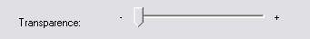
Ce curseur permet de choisir le degré de transparence de la couche appliquée sur la texture. Il n'intervient pas sur cette texture. Lorsque le curseur est à droite, la couche est très transparente donc presque invisible. Lorsqu'il est à gauche, la couche masque quasi complètement la texture sous-jacente. Choisissez le degré qui vous permet de continuer à distinguer les détails des deux en même temps. Exemple (sans texture sous-jacente) :
 Couche non transparente
Couche non transparente
 Couche transparente
Couche transparente
Cadre "Grille"

La case à cocher « Afficher grille »
permet d'afficher une grille de méridiens et de parallèles
sur la surface du globe lunaire affiché.
Le curseur permet de changer le « pas » d'affichage de cette grille. Il varie de 5 en 5° jusqu'à de 30 en 30 °.

Grille avec pas de 1 en 1 °

Grille avec pas de 5 en 5°

Grille avec pas de 30 en 30°
ONGLET "Image"
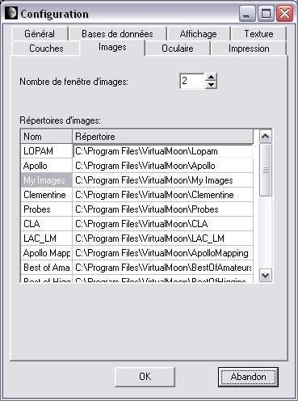
Cet onglet permet de classer les images disponibles dans la bibliothèque compte tenu de leur nombre croissant et de régler leur affichage.
Nombre de fenêtres d'images
En cliquant sur les flèches haute ou basse de la case "Nombre de fenêtres d'image", vous pouvez augmenter ou diminuer le nombre de fenêtres dans lesquelles s'ouvrent les images de formations présentes simultanément à l'écran. Le nombre maximal est fixé à 10. Un réglage optimal est de 5. Il permet la comparaison entre différentes formations du même type ou d'afficher un nombre suffisant d'images de la même formation pour bien en saisir tous les aspects.
Liste des répertoires d'images
Dans la liste "Répertoires d'images", vous pouvez saisir les chemin des bibliothèques d'images que vous souhaitez utiliser. Par défaut, AVL vous créée les sous-répertoires "LOPAM", "Apollo", "Clementine", "Probes" ("Sondes"), "CLA" et "My images" (Mes images) dans lesquels vous pourrez respectivement ranger les images de formations que vous pouvez télécharger depuis le site Web AVL ou que vous acquérirez légalement. Le sous-répertoire "My images" (Mes images) est réservé au rangement de vos propres images prises avec une webcam, un caméra CCD ou scannées.
ONGLET "Oculaires" (Toutes versions)
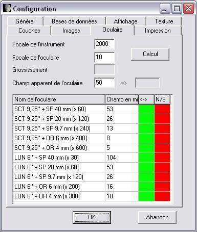
Cet onglet vous permet de rentrer les paramètres de vos oculaires afin de pouvoir visualiser l'aspect réel de la Lune observée dans votre instrument grâce à la fonction "Oculaire" du menu contextuel "Clic droit" de la souris.
Liste d'oculaires
Vous pouvez rentrer directement les caractéristiques de vos oculaires dans les champs de la liste, si vous les connaissez : la description dans la colonne de gauche "Nom de l'oculaire" et le champ apparent en minutes d'arc dans la colonne de droite "Champ en minutes" . Un exemple vous est montré par défaut. Il peut être effacé. Vous pouvez rentrer 10 oculaires au maximum. Nous vous conseillons de les rentrer par ordre croissant de grossissement obtenu.
Calcul des paramètres d'oculaires
Si vous ne connaissez pas les paramètres de vos oculaires, dans le haut de l'onglet une petite calculette va vous y aider. Rentrer d'abord dans le champ du même nom, la "Focale de l'instrument" pour lequel vous souhaitez faire les calculs. Puis rentrez la "Focale de l'oculaire" considéré dans le champ prévu. Enfin, rentrer la largeur du "Champ apparent de l'oculaire" dans le troisième champ prévu. Ce champ est le champ en degrés fournis dans les documentations et publicités sur les types d'oculaires. Ainsi un oculaire de type Plössl a un champ apparent d'environ 50°, un oculaire ultra grand angle comme les UWA Meade ou les Nagler Televue, un champ de 82°.
Appuyez sur le bouton "Calcul". Dans le cadre "Champ réel de l'oculaire" apparaît le diamètre de la région observée sur la Lune en minutes d'arc avec cet oculaire et l'instrument mentionné précédemment. Dans le champ "Grossissementde l'oculaire", est affiché le grossissement donné par l'oculaire avec l'instrument mentionné. Une fois le calcul effectué, il vous reste à reporter ces valeurs et la description de l'oculaire dans les deux colonnes du tableau inférieur.
Vous pouvez également incorporer directement les effets d'orientation dus à la nature de l'instrument utilisé en cliquant dans les cases des colonnes "<->" (Inversion droite - gauche) et "N/S" (Inversion Nord / Sud). L'exemple ci-dessus vous montre la configuration pour un Schmidt - Cassegrain et un télescope de type "Newton".
ONGLET "Impression"
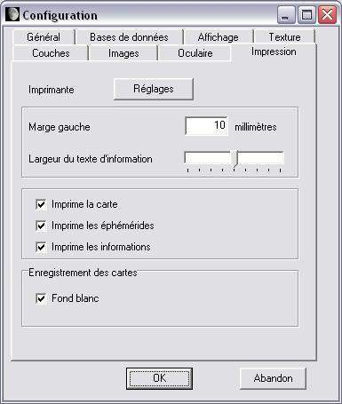
Cet onglet permet de régler les paramètres d'impression des cartes.
Bouton "Réglages"
Ce bouton donne accès au réglage "Windows" des paramètres de l'imprimante.
Format d'impression
Ces zones vous permettent de choisir la largeur de la marge lors de l'impression et la grandeur des polices d'impression.
Cases à cocher des documents à imprimer
Ces cases à cocher vous permettent de choisir les documents à imprimer.
La case "Imprime la carte" permet d'imprimer la carte qui figure dans la fenêtre carte. Elle est en noir et blanc pour les cartes topographiques et en couleurs pour les cartes géologiques, avec des noms en couleur dans les deux cas. Il est possible que vous ayez à agrandir la police de la carte afin de rendre les noms plus visibles à l'impression
Le texte "Imprime les éphémérides" contient les informations orbitales, de phase et de librations correspondant aux dernières dates et heures sélectionnées dans l'onglet "Ephémérides".
Le texte "Imprime les informations" contient la fiche d'information de la dernière formation sélectionnée sur la carte.
Enregistrement des cartes
Les cartes affichées peuvent être enregistrées sur papier avec un fond blanc autour du disque lunaire en cochant cette case afin de diminuer les consommations d'encre ou de toner.
LE MENU "AIDE"
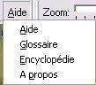
Ce menu vous donne accès aux outils vous permettant de mieux utiliser l'atlas.
Rubrique "Aide"
Ce choix vous permet d'afficher dans une fenêtre indépendante le présent manuel.
Rubrique "Glossaire"
Ce choix vous permet d'afficher un glossaire de plus d'une centaine de termes liés à la Lune et à son observation.
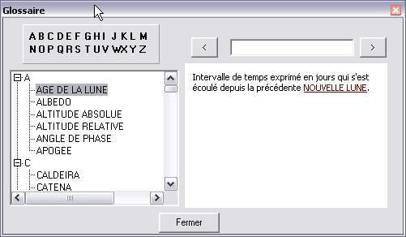
Le glossaire se présente dans une fenêtre indépendante divisée en 3 parties.
La partie supérieure comprend les lettres de l'alphabet. En cliquant sur l'une d'entre elles, vous avez accès aux mots commençant par cette lettre.
La partie inférieure gauche est une arborescence des lettres et de termes.
La partie droite contient la définition du terme sélectionné dans la partie gauche. Des liens vous renvoient aux autres définitions du glossaire utilisées dans la définition choisie.
Rubrique "Encyclopédie"
Ce choix vous donne accès à une page présentant les principales dimensions de la Lune et de son orbite.
Rubrique "A propos" (Toutes versions)
Cette rubrique vous indique la répartition des tâches entre Christian Legrand et patrick Chevalley pour la réalisation de l'atlas.
LE CURSEUR DE ZOOM

En ajustant ce curseur, vous pouvez régler la puissance du zoom appliqué à la fenêtre "Carte" sélectionnée (Voir "fenêtre carte")..
Situé complétement à gauche, le globe lunaire est entièrement visible. En déplaçant le curseur vers la droite, on augmente le facteur de zoom
En fonction de la résolution des textures choisie dans les réglages (Voir "onglet "Réglages"), le zoom ne fera plus apparaître de nouveaux détails et l'affichage pourra devenir un peu plus flou.
L'affichage des noms de formations est plus ou moins important en fonction de la densité et de la taille des labels (Voir "labels et marques".)
LE BOUTON "1:1"
En cliquant sur ce bouton, vous revenez instantanément au zoom minimal, vous permettant de faire tenir entièrement le globe lunaire dans la fenêtre "Carte" sélectionnée, qu'elle que soit la taille de celle-ci.
LE BOUTON "Centre"
En cliquant sur ce bouton, vous positionnez instantanément le centre du globe lunaire visible au centre de votre écran lorsque le zoom est au minimum. Ce bouton sert aussi à centrer la formation sélectionnée dans la fenêtre "Carte" sélectionnée.
LE BOUTON "Nord / Sud "
En cliquant sur ce bouton, vous inversez immédiatement le sens Nord-Sud de la fénêtre "Carte" sélectionnée. Il doit être utilisé en combinaison avec le bouton "Est - Ouest" ci dessous pour passer de la vue à l'oeil nu à la vue dans un télescope Newton.
LE BOUTON "Est / Ouest "
En cliquant sur ce bouton, vous inversez immédiatement le sens Est-Ouest de la fénêtre "Carte". Pratique pour passer de la vue à l'oeil nu à la vue dans un télescope catadioptrique ou dans une lunette équipés d'un renvoi coudé.
LE BOUTON "Rotation / Globe entier"
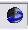
En cliquant sur ce bouton, vous avez accès à une puissante fonction de cette version. Lorsqu'il n'est pas enfoncé, la fenêtre carte vous montre la face visible depuis la Terre avec la phase et la libration appliquées si vous avez coché les cases nécessaires dans l'onglet "Affichage" du menu "Configuration". Mais si vous enfoncez le bouton, il bascule en mode "Globe" et la fenêtre carte affiche alors un globe complet en trois dimensions que vous aller pouvoir observer sous toutes ses faces.
LE BOUTON "Libration"
En enfonçant sur ce bouton, vous affichez ou enlevez la visualisation de la libration sur le globe lunaire.
Le bouton « Grille » permet d'afficher ou d'enlever la grille de méridiens et de parallèles sur la surface du globe lunaire affiché.
LE BOUTON "Phase"
En enfonçant sur ce bouton, vous affichez ou enlevez la visualisation de la phase sur le globe lunaire.
En enfonçant sur ce bouton, vous affichez ou enlevez une échelle de dimensions en bas à gauche de la fenêtre "Carte".

Attention, cette échelle indique les dimensions angulaires. Elle n'indique pas les dimensions à la surface du globe. Pour mesurer des distance sur le globe, il faut utiliser la mesure de distance qui est prévue dans l'onglet "Outils".
Ce bouton vous permet d'afficher ou de retirer les labels / étiquettes. Son utilisation est pratique pour adapter rapidement la couleur des labels au contexte des teintes de la carte, notamment lors de l'utilisation des couches scientifiques.
LE BOUTON "Voisinage"
En cliquant sur ce bouton, une nouvelle fenêtre apparaît qui contient le nom des formations situées dans le voisinage de la formation actuellement affichée. Vous pouvez cliquer sur l'une d'entre elles pour vous y rendre.
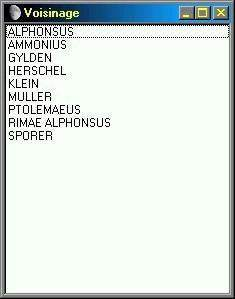
LE BOUTON "Image"
Dans la version Pro, le bouton "Image" donne accès à PHOTLUN (c), le module évolué de gestion des images de l'AVL.
Il fait apparaître la bande des vignettes et la barre des menus de PHOTLUN.

Ce module permet un choix plus facile des images à afficher grâce à la prévisualisation permise par les vignettes.
Nous vous renvoyons à la documentation spécifique de PHOTLUN pour en découvrir toutes les possibilités et notamment les fonctions de traitement d'images (Rotation, zoom, contraste et luminosité).
Les bibliothèques d'images
La bibliothèque d'images est modulaire, c'est à dire qu'on peut y ajouter autant de sources que l'on veut. Vous pouvez télécharger pour cette version des fichiers d'images provenant de six sources différentes
IMAGES DU "LUNAR ORBITER PHOTOGRAPHIC ATLAS OF THE MOON"
"Aristillus" et "Vallis Alpes"

La bibliothèque d'images de l'AVL contient dans cette version les images de plus de 1000 formations. Ces images ont été obtenues à partir des planches de la version électronique du "Lunar Orbiter Photographic Atlas of the Moon" (LOPAM) réalisée par l'équipe de Jeff Gillis au Lunar and Planetary Institute. Ce remarquable travail est consultable sur le site :
http://www.lpi.usra.edu/research/lunar_orbiter/
Christian Legrand a extrait à partir de chacune des 200 planches du LOPAM des images de chaque formation qui s'y trouvait. Il a ainsi "récolté" 3000 images utilisables. Puis, il a fallu choisir les meilleures d'entre elles pour chaque formation.
Pour certaines formations qui étaient coupées entre plusieurs images, il a fallu raccorder les morceaux en ayant parfois appliqué des traitements sur leur orientation et leur forme. Puis il a fallu compresser ces clichés en trouvant un compromis entre qualité et taille du fichier afin de les rendre facilement téléchargeables.
Malgré cet important travail, environ 150 formations nommées n'ont pû être retrouvées dans le planches compte tenu du fait que la sonde Lunar Orbiter 4 n'a pas cartographié la totalité de la face visible.
Pour ceux qui ne souhaitent pas télécharger la totalité des images, Christian Legrand a sélectionné les formations lunaires les plus connues (130 ) et les a regroupé dans le fichier "Stars de la Lune".
Ces images sont fournies sous le copyright général du "Lunar and Planetary Institute" détenteur des droits de reproduction et ne peuvent utilisées en dehors du logiciel.
IMAGES DES MISSIONS APOLLO

Copernicus vu par les astronautes de la mission Apollo 12
Toujours dans le but de fournir une vision la plus complète possible des formations lunaires, Christian Legrand a sélectionné dans les photographies prises par les missions Apollo, plus de 400 images relatives à plus de 300 formations différentes.
Christian Legrand a extrait à partir de plus de 1000 clichés de la NASA des images des formations qui s'y trouvait. Il a ainsi "récolté" 500 images utilisables. Puis, il a fallu choisir les meilleures d'entre elles pour chaque formation.
Ces images sont fournies sous le copyright général de la "National Air and Space Administration" (NASA) détentrice des droits de reproduction ( cf http://www.nasa.gov )et ne peuvent utilisées en dehors du logiciel .
Le nom des photos indique le nom de la formation ainsi que la mission Apollo au cours de laquelle fut pris le cliché lorsqu'elle est connue : ainsi COPERNICUS_A12.JPG est le nom de l'image ci dessus.
APOLLO MAPPING CAMERAS MISSIONS

Theophilus vu par la Mapping Camera de Apollo 16.
Mis en ligne par le "Lunar and Planetary Institute", les photos des "Apollo Mapping Cameras" qui étaient à bord des modules de service des missions Apollo sont parmi les plus détaillées de la surface lunaire jamais réalisées.. Christian Legrand a sélectionné parmi les planches publiées, des centaines d'extraits qui montrent les plus belles vues des formations de la Face visible.
Christian Legrand a ainsi extrait environ 1000 images et en a sélectionné environ 700.
Ces images sont fournies sous le copyright du "Lunar and Planetary Institute" et elles ne peuvent être utilisées en dehors de l'atlas.
Le nom de l'image indique le nom de la formation et la mission Apollo qui a prise l'image originale quand il est connu. : ainsi COPERNICUS_A12.JPG est le nom d'une image de Copernicus prise pendant la mission Apollo 12.
Les images APOLLO MAPPING sont dans le répertoire "Apollomapping"
IMAGES DES SONDES LUNAIRES
D'autres sondes que Lunar Orbiter 4 ont mesuré et photographié la Lune. Il s'agit des sondes américaines Ranger, Lunar Orbiter 1,2,3,5 et des Surveyor. Dans le contexte historique de la course à la Lune, l'ex Union Soviétique a aussi lancé un grand nombre de sondes Luna.


La base de la sonde soviétique Luna 17 photographiée par le robot mobile Lunakhod 1 (A gauche) et le panorama des flancs du cratère Tycho pris par la sonde américaine Surveyor 7 (A droite).
Cette nouvelle photothèque réalisée par Christian Legrand rassemble 120 clichés pris par ces différentes sondes.
Ces images sont sous le copyright général de la NASA ( http://www.nasa.gov ) en ce qui concerne les sondes américaines. Les images des sondes russes n'ont pas de détenteurs de droits clairement identifiés. Ces images ne peuvent utilisées en dehors de l' "Atlas Virtuel de la Lune".
Les noms des photos indique le nom de la formation
ainsi que la sonde ou la mission Apollo qui a pris le cliché.
Les diminutifs suivants sont utilisés dans lequel XX
indique le numéro de la mission :
- A : Apollo
- LO :
Lunar Orbiter
- LU : Luna
- RA : Ranger
- SU : Surveyor
Par exemple, LUNA 9_LU9.jpg est une image du site de Luna 9 prise par la sonde Luna 9 elle-même. De même SURVEYOR 3_A12.jpg est une photo de Surveyor 3 prise lors de la mission Apollo 12.
Les photos des sondes sont accessibles à partir du nom de la formation s'il s'agit d'une image de formation, ou à partir du nom des sondes s'il s'agit d'une photo de site d'alunissage prise par la sonde.
Les images des sondes lunaires sont rangées par défaut dans le sous-répertoire "Sondes".
IMAGES DE LA SONDE CLEMENTINE
L'autre grande source d'images de formations lunaires est due à la mission américaine "Clementine". Cette petite sonde a cartographié avec une résolution atteignant 100 à 200 m par pixel sur certains clichés la quasi totalité de la surface lunaire.
Les images de Clementine sont complémentaires de celles du LOPAM. Si leur résolution et leur qualité générale est meilleure, elles ont un défaut pour les observateurs terrestres, elles ont été prises alors que le Soleil était au méridien de la formation photographiée. C'est à dire avec un éclairage vertical qui gomme les ombres et met en valeur l'albédo de la formation.
Pour les formations situées dans une bande comprise entre + 45 ° Nord et - 45 ° Sud, les clichés donnent donc avant tout des indications sur l'albédo de la formation photographiée. Comparez par exemple les images de Bessarion LOPAM et Clementine pour voir la différence.
Pour les formations situées au delà de ces coordonnées en allant vers les pôles, des ombres apparaissent et certaines se révèlent plus détaillées que celles du LOPAM. Comparez en regardant les images du cratère Arzachel par exemple.


Image du cratère Arzachel prise par Clementine (En haut) comparée à celle du LOPAM (En bas).
Christian Legrand est en train d'extraire et de retraiter les images des formations lunaires du fichier général fourni par l'USGS. Surveillez régulièrement notre site Web pour voir les nouveaux ajouts à la photothèque "Clementine". Toutefois, compte tenu de l'existence de la texture "Clementine photographique à haute résolution de 500 m, la production de nouvelles images Clementine est actuellement différée.
Ces images sont fournies sous le copyright général de laNASA détentrice des droits de reproduction et ne peuvent utilisées en dehors du logiciel.
Les images de Clementine sont rangées par défaut dans le sous-répertoire "Clementine".
IMAGES DE LA SONDE JAPONAISE KAGUYA

Ces images ont été obtenues à partir des images prises par la sonde japonaise KAGUYA et mises en ligne sur le site de la Japan_Aerospace_eXploration_Agency (JAXA). Ce remarquable travail est consultable sur le site :
http://wms.selene.jaxa.jp/index_e.html
Christian Legrand a extrait à partir de chacune des photos des images de chaque formation qui s'y trouvait. Il a ainsi "récolté" 160 images utilisables. Il s'agit d'images de formations prises obliquement, ce qui apportent de nouvelles données sur la forme réelle des formations (cf Rupes Recta ci-dessus)
Ces images sont fournies sous le copyright général de la "Japan_Aerospace_eXploration_Agency" détenteur des droits de reproduction et ne peuvent utilisées en dehors du logiciel.
IMAGES DU CONSOLIDATED LUNAR ATLAS
Le meilleur atlas photographique de la Lune jamais publié est le "Consolidated Lunar Atlas " de Gerard Kuiper et son équipe.
Il est la compilation des meilleures images prises depuis la Terre par quelques grands observatoires dont l'observatoire de Catalina, du Pic du Midi. La résolution de certaines d'entre elles atteint ou dépasse le km et ne sont surpassées que depuis peu par des amateurs puissamment équipés maîtrisant l'utilisation des webcams...
Cet atlas est d'une valeur inestimable pour les observateurs terrestres, car comme pour "l'atlas photographique de la Lune de Georges Viscardy", les planches photographiques qui le constituent, ont été prises avec des hauteurs du Soleil différentes, vers le lever et le coucher de celui-ci sur les formations et aussi lors de la Pleine Lune.
Voici par exemple quelques extraits des planches concernant le cratère Archimedes :


Ces images permettent de voir l'aspect des formations prévisible en fonction du jour de leur observation. Cette bibliothèque est en cours de compilation par Christian Legrand. Elle comporte déjà plus de 3000 images et va être régulièrement abondée. Elle devient prioritaire sur les images Clementine car ces clichés sont plus utiles pour les observateurs que celles de Clementine et la texture "Clementine 500 m resolution" les remplace momentanéùent avantageusement. Surveillez régulièrement notre site Web pour voir les nouveaux ajouts à la photothèque "CLA".
Ces images sont fournies sous le copyright général du "Lunar and Planetary Institute" détenteur des droits de reproduction et ne peuvent utilisées en dehors du logiciel.
Ce remarquable travail est consultable sur le site :
Les images du Consolidated Lunar Atlas sont rangées par défaut dans le sous-répertoire "CLA".
IMAGES DES LUNAR ASTRONAUTICAL CHARTS ET DES LUNAR MAPS
Les meilleures cartes dessinées de la Lune jamais publiées sont les "Lunar Astronautical Charts" et les "Lunar Maps". Leur échelle est au 1 000 000 ème. La plupart comportent le tracé de courbes de niveau d'altitude permettant de déterminer les hauteurs ou profondeurs des formations.


Christian Legrand a ainsi extrait des LAC / LM plus de 800 images de formations nommées de la Face Visible. Compte tenu de leur précision et des couleurs utiles, ces images n'ont pas été compressées. Cette bibliothèque d'images est donc lourde à télécharger.
Ces images sont fournies sous le copyright général du "Lunar and Planetary Institute" détenteur des droits de reproduction et ne peuvent utilisées en dehors du logiciel.
Ce remarquable travail est consultable sur le site :
Les images des Lunar Astronautical Charts et des Lunar Maps sont rangées par défaut dans le sous-répertoire "LAC / LM".
Cet ensemble de bibliothèque d'images des formations permet de disposer de clichés permettant des comparaisons et études topographiques sur les formations.
IMAGES DES MEILLEURS ASTROPHOTOGRAPHES LUNAIRES
Les meilleures astrophotographes lunaires ont acceptés que les formations individuelles soient extraites de leurs images brutes par Christian Legrand et incorporées ensuite dans une bibliothèque d'images au format de l'AVL.
Vous trouverez les bibliothèques suivantes :
- Best of Lazzarotti : Elle contient les images réalisées par Paolo Lazzarotti avec son Gladius de 300 mm (Aristoteles ci-dessous)

- Best of Higgins : Elle contient les images réalisées par Wes Higgins avec son Dobson de 450 mm (Schiller ci-dessous)
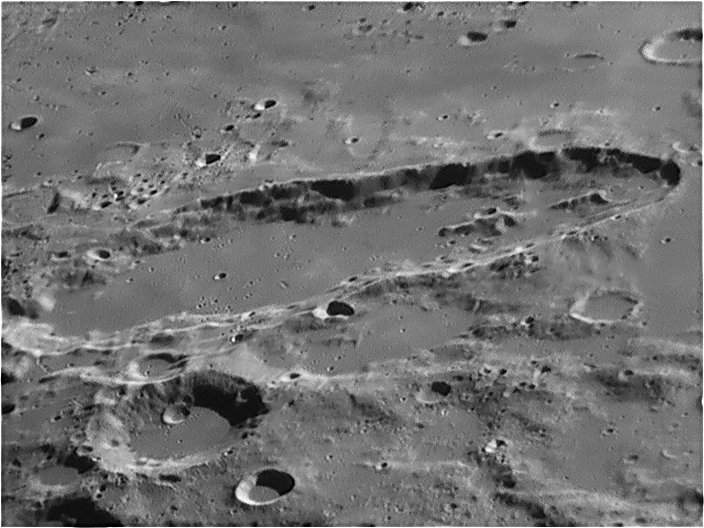
- Best of Amateurs : Elle contient les images réalisées par Mike Wirths (Les dômes d'Hortensius ci-dessous), Greg Zerbe

LE BOUTON "DATLUN "
En cliquant sur ce bouton, vous pouvez ouvrir la fenêtre de "DATLUN" (c) qui est le gestionnaire de données de l'AVL

Vous pouvez découvrir tout le potentiel de ce module
conçu par Christian Legrand et programmé par Patrick Chevalley en
consultant son manuel spécifique.
LE BOUTON "Fenêtre 2 "
En cliquant sur ce bouton, la fenêtre carte se sépare en deux fenêtres de largeur égale côte à côte. Cette seconde fenêtre comporte les mêmes fonctionnalités que la fenêtre principale. Vous avez accès à la carte, au menu configuration, aux onglets et au bouton "Globe entier". Pour rendre une fenêtre active et accéder aux réglages et outils, il suffit de cliquer une fois dedans.
Cette seconde fenêtre s'ouvre avec la même région lunaire que la première. Vous pouvez ainsi facilement comparer les deux fenêtres. et vous pouvez appliquer dans cette seconde fenêtre des textures et des couches différentes de la première.

Ecran montrant la fenêtre principale de l'AVL "Pro" avec le bifenêtrage et les couches scientiques "Altitude" et "Géologie".
Attention ! Cette nouvelle fonction
est gourmande en ressources et nécessite un ordinateur
puissant pour pouvoir être exploitée dans
toutes
ses possibilités simultanément (Si possible
fréquence supérieure à 2 Ghz, 512 Mo de RAM
et carte graphique supportant OpenGL avec 64 Mo de RAM Vidéo).
Si vous cliquez sur ce bouton, les onglets à droite, la barre de titre, la barre des menus et la barre d'état disparaissent toutes, ne laissant que la fenêtre "Carte", ou la double fenêtre "Carte" seulement sur l'écran.

Fabuleux pour les grands moniteurs, les télévisions LCD et les vidéoprojecteur !!!
Egalement utile lors de conférences.
Un click avec le bouton gauche sélectionne une formation.
En restant appuyé sur le bouton gauche et en bougeant la souris, vous faîtes bouger la souris. La molette de la souris commande le zoom.
Vous avez toujours accès au menu "clic droit" pour gérer les outils.

La fenêtre "Carte" se trouve dans la partie gauche de la fenêtre générale. Elle montre la la face visible depuis la Terre avec la phase et la libration appliquées si vous avez coché les cases nécessaires dans l'onglet "Affichage" du menu "Configuration" ou, pour la version "Expert", le globe complet de la Lune selon l'option choisie (Voir "Bouton "Globe entier"). Elle est inamovible et n'est pas redimensionnable. Des ascenseurs apparaissent selon le facteur de zoom appliqué (Voir "Curseur de zoom"). La fonction de ces ascenseurs varie selon le mode "Face visible" ou le mode "Globe entier" dans la version "Expert".
La largeur de la fenêtre "Carte" est maintenant redimensionable. Amenez le pointeur sur sa séparation avec les onglets de droite, restez appuyer sur le bouton gauche de la souris. Bougez celle-ci pour faire varier la largeur et relachez le bouton quand vous avez trouvé la bonne largeur.

LA CARTE
Elle est, par défaut orientée de façon que la Lune présentée soit dans le même sens que vue à l'oeil nu ou dans des jumelles.
Vous pouvez faire tourner la carte autour de son axe central pour vous rapprocher de la vision dans l'oculaire d'un télescope de type "Newton". Vous pouvez également afficher la carte de la Lune vue comme dans un miroir pour vous rapprocher de la vision dans l'oculaire d'un instrument muni d'un renvoi coudé tel que lunette, télescope Cassegrain, Schmidt-Cassegrain, Maksutov, Dall-Kirkham... ( Voir Onglet "Outils" ).
La carte"Face visible"

Elle montre uniquement la face visible de la Lune.
Si l'option "Libration" (Voir Menu "Configuration") est choisie, le centre de la face visible n'est pas forcément au centre du dessin présenté vu l'influence de la libration.
La carte "Globe entier"

Elle permet de visualiser le globe lunaire complet et d'étudier la face cachée invisible depuis la Terre (Sur la copie d'écran ci-dessus, on remarque Mare Orientale). I
Si les options "Affiche la libration" et " Affiche la phase " (Voir Menu "Configuration") sont choisies, l'éclairage du globe lunaire est conforme à l'éclairage réel pour l'heure et la date choisie grâce à l'onglet " Ephémérides" .
Déplacement de la carte
Dès qu'un facteur de zoom est appliqué à la carte, il est possible de se déplacer dans celle-ci. Mais le mode de déplacement est différent selon que vous êtes en mode "Face visible" ou en mode "Globe entier". Dans les deux cas, vous pouvez utiliser les classiques ascenseurs Windows à droite et en bas de la fenêtre "Carte" pour monter ou descendre la partie du disque ou du globe affichée dans cette fenêtre.
En mode "Face visible", vous pouvez aussi "saisir" le disque en faisant un clic gauche avec la souris sur une partie de celle-ci et, en maintenant le bouton gauche appuyé, la déplacer dans le sens souhaité en bougeant la souris.
En mode "Globe entier", vous pouvez aussi "saisir" la globe en faisant un clic gauche avec la souris sur une partie de celle-ci et, en maintenant le bouton gauche appuyé, la faire tourner dans le sens "Est" ou "Ouest" ou «Nord» ou «Sud» en bougeant la souris.
Clic droit de la souris
Un clic droit de la souris sur une formation entraîne l'appartion d'un menu contextuel comprenant plusieurs rubriques :
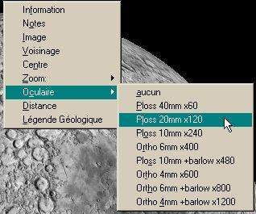
Information : Renvoie à la fenêtre "Base de données" pour connaître les informations relatives à la formation sélectionnée.
Notes : Affiche la fenêtre "Bloc notes" pour visualiser ou enregistrer vos données personnelles pour la formation sélectionnée.
Image : Lance l'affichage de la ou des photos de la formation sélectionnée.
Voisinage : Affiche dans une fenêtre la liste des formations voisines de la formation sélectionnée.
Centre : Permet de centrer la carte sur la formation sélectionnée ou de centrer le disque ou le globe lunaire lorsque le zoom est "1:1".
Zoom : Permet de régler directement le facteur de zoom à 1/1, 2/1 ou 4/1.
Oculaires : Permet de choisir l'oculaire utilisé et de matérialiser la vision exacte dans l'instrument. Un cache noir percé d'un cercle transparent apparaît alors dans la fenêtre carte. Pour l'enlever lorsqu'il est affiché, il suffit de cliquer sur l'option "Aucun".
Distance : Permet d'activer le mode "Mesure de distance" (Voir "Mesure de distance")
Satellisation : Actif seulement dans le mode "Globe entier". Il permet d'activer une rotation automatique pour faire défiler le globe comme pour une satellisation. Les vitesses indiquées sont en "degré de longitude par seconde" ou la rotation manuelle du globe grâce à "Direction".
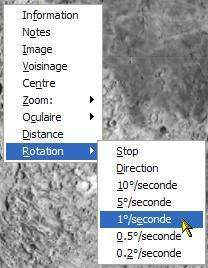
L'ONGLET "INFORMATION"
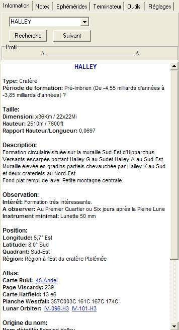
LA LISTE DEROULANTE "RECHERCHE"

Vous pouvez entrer dans cette liste des lettres figurant dans le nom d'une formation et employer des "jokers". Ainsi, "×tri" inclura dans la liste déroulante "Triesnecker" et "Rimae Triesnecker".
LE BOUTON "RECHERCHE"
En cliquant sur ce bouton, vous affichez la formation choisie dans la liste "Recherche".
LE BOUTON "SUIVANT"
En cliquant sur ce bouton, vous affichez la formation suivante de la liste "Recherche".
LE CADRE "Profil"

Dans ce cadre, s'affiche le profil de la formation choisie dans votre recherche et dont la fiche apparaît dans la fenêtre "base de données".
Il s'agit d'un champ semi-graphique qui donne une idée du profil en coupe de la formation. Cette information n'est fournie que si la hauteur de la formation est indiquée.
De même, il n'a pas été généré pour les types de formations suivants pour lesquels il n'est pas représentatif :
- Golfe
- Lac
- Marais
- Mer
- Mission
humaine
- Océan
- Sonde
Cette visualisation
est réalisée comme suit :
Les cratères sont représentés comme suit :
A________________A
< n caractères _>
Les caractères "A" visualisent la hauteur des parois du cratère. Le nombre de caractères "_" matérialise, à l'échelle des parois la largeur du cratère.
Dans l'exemple ci-dessus, le rapport entre la hauteur et la largeur du cratère est de 1/8.
Les massifs montagneux centraux n'ont pas été visualisés, car leur hauteur propre poserait des difficultés pour la représentation en mode semi-graphique.
Chaque profil est caractéristique d'une formation. De ce fait, seule la forme du profil est représentative. Mais on ne peut pas comparer les dimensions des profils de deux formations.
Exemple :
A__________A Profil de (Largeur =20 km & hauteur = 4000 m)
A__________A Profil de (Largeur = 5 km & hauteur = 1000 m)
A l'écran, les profils sont les mêmes, mais comme on peut le voir, les dimensions sont très différentes.
Pour les montagnes, chaînes de montagnes, dômes et dorsales, un autre mode de visualisation du relief a été utilisé :
___A___
Le caractère "A" visualise la hauteur de la montagne. Le nombre de caractères "_" matérialise, à l'échelle de la hauteur, la largeur moyenne de la montagne à sa base.
Dans l'exemple ci-dessus, le rapport entre la largeur et la hauteur est de 1/7, soit typique d'une montagne telle que Mons Pico.
Pour les rainures, systèmes de rainures et les vallées, le profil est visualisé de la façon suivante :
___ ___
V
Le caractère "V" visualise la profondeur de la rainure. Le nombre de caractères "_" matérialise, à l'échelle de la hauteur, la largeur de la rainure.
Dans l'exemple ci-dessus, le rapport entre la largeur et la hauteur est de 1/7. Précisons que nous n'avons pu retrouver dans les ouvrages sur la Lune que la profondeur de peu de rainures.

La fenêtre "Base de données" est organisée de façon à afficher les informations correspondant à la formation choisie. Elle dispose d'un ascenseur au cas où la totalité des données ne tiendrait pas dedans.
La base de données de la version de la version "Expert" est la plus importante existante à ce jour. Le fichier représente plus de 5 Mo de texte. Elle contient les fiches descriptives de plus de 9000 formations lunaires dont près de 6500 pour la face visible.
Elle est séparée en quatre bases distinctes :
- Formations nommées de la face visible :
Les formations de la Face Visible qui ont un nom spécifique ( ex :
Clavius, Rima Hyginus, Montes Alpes...) : (1100
entrées environ)
- Cratères indicés de la
face visible : Les formations de la Face Visible qui n'ont pas
un nom spécifique ( ex : Clavius D, Hyginus A...) : (5300 entrées environ)
-
Formations nommées
de la face cachée : Les formations de la Face Cachée qui
ont un nom spécifique ( ex : Tsiolkovsky, Mare Moscoviense...) : (650 entrées environ)
-
Cratères indicés de la face cachée : Les
formations de la Face Cachée qui n'ont pas un nom spécifique ( ex :
Tsiolkovsky D, Schrodinger A...) : (4100
entrées environ)
- Sites historiques des deux faces :
Les sites de tous les impacts volontaires ou accidentels d'origine
humaine compilée par Christian Legrand (ex : Apollo 15 Base, Ranger
7, Luna 9, Apollo 17 S-IVB...) (58
entrées)
- Dépôts pyroclastiques : La liste des dépôts pyroclastiques
compilée par Lisa Gaddis et son équipe (80 entrées)
- Dômes lunaires : Une liste de dômes volcaniques lunaires
compilée par les membres de l'association ALPO (700 entrées)
Pour chaque formation, les informations mentionnées sont relatives à :
- le type et l'origine géologique de la
formation
- les dimensions et la description de la formation.
-
divers renseignements utiles pour l'observation
- la
localisation de la formation sur le disque lunaire.
- la
mention des cartes et pages présentant la formation dans
les principaux atlas de la Lune disponibles
- l'origine du nom
de la formation.
Attention : Dans un document aussi important par la taille, il doit certainement rester des erreurs de saisie malgré le soin apporté. Vous pouvez les indiquer à Christian Legrand. Elles seront corrigées dès que possible. L'auteur vous remercie par avance pour votre collaboration.
La base de données de l'AVL sera constamment augmentée dans les futures versions afin d'apporter de plus en plus de renseignements sur toujours plus de formations. Surveillez notre site Web pour voir les mises à jour.
ATTENTION : Les informations des bases de données de l' "Atlas Virtuel de la Lune" sont fournies sous le copyright "(c) Christian Legrand" et ne peuvent être utilisées en dehors de ce programme. Pour tout autre utilisation veuillez contacter Christian Legrand.
DESCRIPTION DETAILLEE DES INFORMATIONS DES BASES DE DONNEES :
NOM OFFICIEL :
Le nom principal de la formation en latin utilisé officiellement par l'Union Astronomique Internationale en majuscules est affiché en caractères majuscules bleu en haut de la fenêtre. Dans la base "Sites historiques", c'est le nom de la mission (ex : Apollo 15 Base, Ranger 7, Luna 9, Apollo 17 S IV B...)
TYPE DE FORMATION :
Ce champ contient le type de la formation en conformité avec les définitions de l'Union Astronomique Internationale ou traditionnels plus quelques ajouts spécifiques :
- Cap
- Chaîne de cratères
-
Chaîne de montagnes
- Cratère
- Craterlet
-
Dorsale
- Dôme
- Escarpement
- Golfe
- Lac
-
Marais
- Mer
- Mission humaine (Lieu d'alunissage)
-
Montagne
- Plateau
- Plaine
- Plaine murée
-
Rainure
- Sonde (Lieu d'impact ou d'alunissage)
- Système
de dômes
- Système de dorsales
- Système
de rainures
- Vallée
La base "Sites historiques" contient des types spécifiques :
- Mission humaine / Atterissage
- Equipement
inerte / Impact volontaire
- Equipement inerte / Impact
involontaire
- Sonde / Impact volontaire
- Sonde / Impact
involontaire
- Sonde / Atterrissage
PERIODE DE FORMATION :
L'âge de la formation est indiqué en fonction de la période lunaire de sa mise en place. Les 6 périodes généralement admises dans la littérature actuelle sont :
Le Pré-Nectarien : (-4550 MA à -3920
MA)
Le Nectarien : (-3920 MA à -3850 MA)
L'Imbrien
inférieur: (-3850 MA à -3800 MA)
L'Imbrien
supérieur: (-3800 MA à-3200 MA)
L'Eratosthénien
: (-3200 MA à-1100 MA)
Le Copernicien : (-1100 MA à
nos jours)
MA = Millions d'années
L'âge indiqué a été extrait du remarquable livre de Don E. Wilhelms et son équipe : "The geologic history of the Moon", USGS publication n° 1348 de 1981. Les cartes et les textes de cet ouvrage ont fourni la moitié des âges indiqués. Postérieur aux missions Apollo, cet ouvrage intègre la plupart des découvertes effectuées à cette époque.
Dans cette bible de la géologie lunaire, certains cratères sont des exemples idéaux de formations de chacune des 6 périodes. Ils ont été nommés dans la base de données comme "Typique".
L'autre moitié des âges a été obtenue à partir d'une carte géologique de la Lune établie également par Don E. Wilhelms et son équipe en 1971. La localisation des formations sur cette carte étant moins précise, les âges indiqués sont terminés par un "?" afin de montrer l'incertitude qui subsiste par rapport à la source précédente. Par ailleurs, cette carte établie, avant les résultats des missions Apollo ne comporte que 4 périodes géologiques.
Le Pré-Imbrien : (-4550 MA à -3850 MA)
qui regroupe le Pré-Nectarien et le Nectarien.
L'Imbrien
: (-3850 MA à-3200 MA) qui regroupe les Imbriens inférieur
et supérieur
L' Eratosthénien : (-3200 MA à-1100
MA)
Le Copernicien : (-1100 MA à-0 M)
Les âges qui sont basés sur cette seconde carte sont donc un peu moins précis que les précédents, tout au moins dans les deux premières périodes de l'évolution lunaire.
Pour certaines formations, il n'a pas été possible de trouver d'information concernant la période de mise en place. Est alors indiqué "Période de formation non trouvée".
Pour la base "Sites historiques", c'est la date de lancement de la mission qui est indiquée dans ce champ.
TAILLE :
Les quatre champs suivants contiennent des données relatives aux dimensions des formations. Celles-ci varient selon les sources. On pourra donc trouver des valeurs différentes de celles d'autres ouvrages. Ont été indiqué en priorité les données émanant de l'Union Astronomique Internationale, puis celles d'autres sources lorsqu'elles paraissaient plausibles. Enfin, certaines dimensions ont été directement mesurée sur cartes ou atlas lorsqu'elles n'ont pu être trouvée dans la littérature. Dans la base "Sites historiques", ces champs sont vides.
Longueur :
Ce champ donne la longueur en kilomètres de la formation. Dans le cas des formations cratériformes, la longueur est dans la plupart des cas égale à la largeur puisqu'il s'agit en fait du diamètre moyen de la formation.
Largeur :
Ce champ donne la largeur en kilomètres de la formation. Dans le cas d'une largeur variable, c'est la largeur moyenne qui est indiquée. Pour les formations cratériformes régulières, elle est égale à la longueur.
Hauteur :
Ce champ traduit des altitudes relatives et non pas des altitudes absolues prises en référence à la sphère lunaire moyenne, et donne la hauteur moyenne en mètres de la formation lorsqu'elle est connue.
Dans le cas des cratères, la hauteur est la différence d'altitude moyenne entre le haut de la muraille et le fond du cratère.
Pour les autres formations, il s'agit de la différence d'altitude entre le sommet de la formation et les terrains avoisinants.
Pour les chaînes de montagnes, il s'agit d'une hauteur moyenne, et l'altitude atteinte par les plus hauts sommets est souvent indiquée en plus dans les rubriques de description.
Pour les rainures et escarpements, le nombre indique en fait la dénivellation en mètres entre le sommet et le bas de la formation.
Rapport :
Cette donnée n'est indiquée que pour les formations dont la hauteur est indiquée et en particulier pour de nombreux cratères. Elle représente le rapport entre le diamètre du cratère et sa profondeur lorsque celle-ci est connue. Ce ratio donne une bonne indication sur le profil général de la formation.
DESCRIPTION
Cette rubrique est divisé en plusieurs champs réservés à la description en clair de la formation. Néanmoins, cette division est transparente lors de la consultation de la fiche de la formation à l'écran ou son impression. La localisation des différents constituants de la formation est indiquée par les points cardinaux, la référence étant appliquée à la partie médiane ou centrale de la formation. Pour un cratère, la référence est le centre du cratère.
Pour une Lune observée à l'oeil nu, le Nord se trouve en haut, le Sud en bas, l'Est à droite et l'Ouest à gauche.
Nord
Nord-Ouest___________________Nord-Est
Centre de
la formation
Sud-Ouest_____________________Sud-Est
Sud
Par exemple, un craterlet située sur la
muraille d'un cratère en bas à gauche sera indiqué
: "Muraille chevauchée par un craterlet au Sud-Ouest".
Les cratères constituants la majeure partie des formations, leur description est divisée en quatre parties.
Description générale :
Sont tout d'abord mentionnées des informations sur la forme, sur l'état ou sur la situation de la formation. Cette rubrique est remplie pour toutes les formations.
Description des versants extérieurs :
Les versants décrits sont les pentes externes des cratères. En règle générale, il s'agit d'indiquer la pente des versants. Cela va de "peu escarpés" si elle est très faible jusqu'à très escarpés" si le sommet des versants est nettement au dessus des terrains environnants.
Si des ondulations ou des vallées radiales marquées sont présentes, les versants sont déclarés "tourmentés". Cette partie indique également les cratères et craterlets qui sont portés par les versants de la formation.
Description de la muraille interne :
La muraille décrite est, cette fois, celle des pentes internes du cratère. Ce sont les véritables murs du cratère qui relient le bord supérieur des versants au fond du cratère. La muraille est déclarée "peu élevée" lorsque la dénivellation ne dépasse pas réellement ou apparemment environ 2000 mètres, "assez élevée" entre 2000 et 3000 m, "élevée" entre 3000 et 4000 m et "très élevée" au delà de 4000 mètres de dénivellation.
Des informations parfois contradictoires ont été
relevées dans différentes sources bibliographiques.
Dans ce cas, celles qui ont été utilisées
sont celles qui paraissaient les plus plausibles à partir
de l'observation.
Cette partie indique également les
cratères et craterlets qui sont portés par la
muraille de la formation.
Description du fond du cratère :
Le fond du cratère est déclaré "plat" ou "tourmenté" si sa texture est irrégulière. Si sa forme n'est pas circulaire, elle est mentionnée. De même, s'il semble que le fond du cratère ait été rempli par un épanchement de lave ultérieur, cette particularité est mentionnée. Cette partie indique également les cratères et craterlets qui sont portés par le fond de la formation.
Sites historiques :
Dans la base "Sites historiques", des descriptions spécifiques sont mentionnées :
- Heur et date de lancement
- Nom des astronautes
en cas de mission humaine
- Description de la sonde ou du
vaisseau spatial utilisé
- Heures et dates des
principales phases de la mission
- Principaux résultats
scientifiques
OBSERVATION
Intérêt :
Cette rubrique donne une indication sur l'intérêt de l'observation de la formation considérée. Cet intérêt a été défini arbitrairement par l'auteur de la base de données en fonction des caractéristiques de la formation et de sa facilité d'observation et d'un certain intérêt géologique personnel. On pourra, bien sûr, ne pas partager l'opinion de l'auteur. Cette information n'est donné qu'à titre indicatif.
Les formations sont déclarées :
- Formation d'intérêt exceptionnel (
côté 4 )
- Formation très intéressante
( côté 3 )
- Formation assez intéressante (
côté 2 )
- Formation peu intéressante (
côté 1 )
Lunaison du soir :
Ces termes signifient le meilleur jour moyen de la lunaison pour bien étudier la formation lors d'une observation effectuée le soir. Il a été admis que l'observation utile des cratères du limbe de la Lune ne peut être effectuée qu'à partir du 2ème jour après la Nouvelle Lune.
Cette rubrique donne le jour d'observation pour une libration nulle. Son calcul a été basé sur la longitude de la formation. En fonction de l'intensité de la libration, il peut y avoir un jour de décalage en plus ou en moins.
Lunaison du matin :
Ces termes signifient le meilleur jour moyen de la lunaison pour bien étudier la formation lors d'une observation effectuée le matin. Il a été admis que l'observation utile des cratères du limbe de la Lune ne peut être effectuée qu'au plus tard, 2 jours avant la Nouvelle Lune.
Cette rubrique donne le jour d'observation pour une libration nulle. Son calcul a été basé sur la longitude de la formation. En fonction de l'intensité de la libration, il peut y avoir un jour de décalage en plus ou en moins.
Instrument conseillé :
Ce champ indique l'instrument minimum nécessaire pour pouvoir observer globalement formation. Il s'appuie sur la largeur de la formation et le pouvoir séparateur pratique (PSP) des instrument, c'est à dire le double du pouvoir séparateur théorique ou le pouvoir séparateur constaté lorsqu'il n'est pas possible de pousser le grossissement de l'instrument jusqu'au grossissement résolvant égal au diamètre de l'instrument exprimé en millimètres.
Ces données sont indiquées pour une distance moyenne de la Lune de 384 400 km. Elles dépendent de trop de facteurs externes ( Précision de l'optique, turbulence atmosphérique, collimation de l'instrument... ) pour pouvoir être considérées comme des données très précises, mais peuvent guider l'observateur dans ses choix.
- Oeil nu ( PSP = 200 km )
- Jumelles 10 fois (
PSP = 40 km )
- Lunette 50 mm ( PSP = 10 km )
- Télescope
100 mm ( PSP = 5 km )
- Télescope 150 mm ( PSP = 3 km
)
- Télescope 200 mm ( PSP = 2,2 km )
- Télescope
250 mm ( PSP = 1,8 km )
POSITION :
Longitude :
Ce champ donne la longitude sélénographique de la formation donnée au dixième de degré près. Ces données sont celles communiquées par l'Union Astronomique Internationale. La longitude est négative à l'Ouest du méridien central. Pour les cratères, il s'agit de la longitude du centre de la formation. Pour les formations allongées ou de forme irrégulière, il s'agit d'un point interne le plus central possible.
Latitude :
Ce champ donne la latitude sélénographique de la formation donnée au dixième de degré près. Ces données sont celles communiquées par l'Union Astronomique Internationale. La latitude est négative au Sud de l'Équateur lunaire. Pour les cratères, il s'agit de la latitude du centre de la formation. Pour les formations allongées ou de forme irrégulière, il s'agit d'un point interne le plus central possible.
Quadrant :
Des informations ont été incluses pour
faciliter la localisation de la formation sur le disque lunaire.
Le système de localisation est celui retenu par l'Union
Astronomique Internationale depuis 1988. Lorsqu'on regarde le
disque lunaire à l'oeil nu, l'Est est à droite et le
Nord en haut. Ce premier champ indique le quadrant lunaire où
se trouve situé la formation en référence
aux
"Lunar Quadrant Charts" de Arthur & Agnieray
éditées par l'Université de l'Arizona :
- Nord-Est
- Sud-Est
- Nord-Ouest
-
Sud-Ouest.
Région :
La rubrique précise le libellé de la région lunaire en clair où se trouve située la formation en référence à une formation connue (mer ou grand cratère) ou à la position par rapport au bord de la Lune appelé "limbe" ou par rapport au centre du disque lunaire.
ATLAS :
Cette rubrique contient les pages, cartes ou planches des principaux atlas lunaires actuellement commercialisés sur lesquelles la formation est clairement indiquée.
Rükl :
En hommage à son auteur pour sa contribution à la popularisation de l'observation de la Lune auprès des astronomes amateurs, nous avons mentionné le numéro de la carte de " l'Atlas de la Lune " de Antonin Rükl sur laquelle se trouve la formation.
Viscardy :
Également en hommage à cet autre auteur pour sa contribution à la popularisation en France de l'observation de la Lune auprès des astronomes amateurs, nous avons mentionné le numéro de la page de " l'Atlas photographique de la Lune à haute résolution " de Georges Viscardy présentant la formation avec un texte ou sur laquelle une photo montre l'endroit où se trouve située la formation. Pour ce dernier ouvrage, lorsque la formation ne figure pas sur au moins une photo, il n'y a pas de page indiquée.
De même, si la formation apparaît sur au
moins une photo, mais n'est pas décrite dans le texte,
c'est la page de
la meilleure photo où elle est
normalement visible qui est indiquée.
Hatfield :
Compte tenu de sa popularité dans les pays anglosaxons, nous avons mentionné le numéro de la carte du "Hatfield Lunar Photographic Atlas of the Moon" dans la version rééditée par Jeremy Cook et sur laquelle se trouve la formation.
Westfall :
Nous avons mentionné les numéros des planches de l' "Atlas of the lunar terminator" du professeur John E. Westfall qui est le seul atlas présentant la Lune en tenant compte des librations sur lesquelles se trouve la formation.
Wood :
Nous avons mentionné les articles du Docteur Charles Wood sur de nombreuses formations lunaires parus dans la revue Sky and Telescope ou le numéro de la formation dans sa liste "Lunar 100" avec sa permission.
LOPAM :
En plus des photographies directement téléchargeables avec AVL, nous avons mentionné les numéros des planches du "Lunar Orbiter Photographic Atlas of the Moon" . Il vous suffit de cliquer sur le lien pour accéder, si vous êtes connecté à Internet à la page du site de Jeff Gillis du Lunar and Planetary Institute pour pouvoir admirer la planche entière de l'Atlas dont est extraite l'image de la formation.
Toutefois, si vous n'êtes pas connecté en permanence à Internet, une autre possibilité s'offre à vous.
En modifiant le fichier "lopamidx.txt" qui se trouve dans le sous répertoire "Database" du répertoire d'installation "Virtual Moon", avec un éditeur de texte, vous pouvez accéder directement aux planches du LOPAM que vous aurez copié sur votre disque dur ou sur un CD enregistrable. Dans ce fichier, il vous suffit d'indiquer après "Local: URL=" le chemin de votre support où se trouvent ces planches, ainsi que le format des images après "SUFFIX=". Exemple :
Local: URL=c:\Program files\Virtualmoon\planches lopam\ SUFFIX=.jpg
permet d'accéder aux planches LOPAM stockées dans le sous-répertoire "planches lopam" du répertoire d'installation "Virtual Moon" sous forme de fichiers ".jpg". Autre exemple :
Local: URL=d:\ SUFFIX=.bmp
permet d'accéder aux planches LOPAM stockées dans la racine d'un CDRom enregistrable placé dans le lecteur d: de votre ordinateur sous forme de fichiers ".bmp".
ORIGINE DU NOM :
Nom réel :
Cette rubrique mentionne le nom réel du personnage ayant servi à nommer la formation. Lorsqu'il existe un surnom, il est indiqué entre parenthèses.
Pour les formations autres que les cratères, le nom officiel est d'abord traduit en fran‡ais, puis il est rappelé après le nom réel du personnage ayant servi à nommer la formation.
Métier :
Ce champ indique, pour les cratères, la ou les activités exercées ou attribuées au personnage ayant servi à nommer la formation :
Voici la liste des "métiers" présents dans la base de données :
- Agronome
- Alchimiste
- Amiral
-
Anthropologue
- Archéologue
- Archevêque
-
Architecte
- Artiste
- Astronaute
- Astronome
-
Astrophysicien
- Aviateur
- Banquier
- Biologiste
-
Botaniste
- Calife
- Cartographe
- Chimiste
- Consul
-
Cosmographe
- Devin
- Dieu
- Écrivain
-
Égyptologue
- Explorateur
- Géodésien
-
Géographe
- Géologue
- Géomètre
-
Géophysicien
- Graveur
- Héros
-
Historien
- Homme d'état
- Homme politique
-
Horloger
- Humaniste
- Hydrographe
- Imprimeur
-
Industriel
- Ingénieur
- Inventeur
- Juriste
-
Marin
- Mathématicien
- Mécène
-
Médecin
- Météorologue
-
Minéralogiste
- Missionnaire
- Naturaliste
-
Navigateur
- Océanographe
- Opticien
-
Paléontologue
- Personnage mythologique
-
Pharmacien
- Philologue
- Philosophe
- Physicien
-
Physiologiste
- Poète
- Prêtre
-
Professeur
- Roi
- Savant
- Sainte
- Sismologue
-
Technicien
- Théologien
- Zoologiste
Pays :
Ce champ indique la nationalité généralement reconnue au personnage ayant servi à nommer la formation. Il peut ne pas s'agir de sa nationalité d'origine. De même, on peut trouver des nationalités aujourd'hui disparues :
- allemand
- américain
- anglais
-
arabe
- australien
- autrichien
- babylonien
- belge
-
britannique
- byzantin
- brésilien
- canadien
-
carthaginois
- castillan
- chinois
- crétois
-
dalmate
- danois
- écossais
- égyptien
-
espagnol
- finlandais
- français
- grec
-
hollandais
- hongrois
- indien
- irlandais
- italien
-
japonais
- macédonien
- mexicain
- norvégien
-
persan
- polonais
- portugais
- romain
- russe
-
soviétique
- sud africain
- suédois
-
suisse
- tchèque
- vénitien
Lieu
de naissance :
Ce champ indique le lieu de naissance du personnage ayant servi à nommer la formation s'il a pu être trouvé. Dans le cas contraire, il figure "?" . A noter que pour les personnages imaginaires, il n'a pas été indiqué de lieu de naissance.
Année de naissance :
Ce champ indique l'année de naissance du personnage ayant servi à nommer la formation si elle a pu être trouvée. Dans le cas contraire, il figure "?" . A noter que pour les personnages imaginaires, il n'a pas été indiqué d'année de naissance.
Lieu de décès :
Ce champ indique le lieu de décès du personnage ayant servi à nommer la formation s'il a pu être trouvé. Dans le cas contraire, il figure "?" . A noter que pour les personnages imaginaires, il n'a pas été indiqué de lieu de décès
Année de décès :
Ce champ indique l'année de décès du personnage ayant servi à nommer la formation si elle a pu être trouvée. Dans le cas contraire figure "?" . A noter que pour les personnages imaginaires, il n'a pas été indiqué d'année de décès.
Faits marquants :
Cette rubrique décrit les faits marquants de la vie du personnage ayant servi à nommer la formation lorqu'ils ont pu être trouvés. Dans le cas contraire, il figure "??".
Ces renseignements sont adaptées des informations de l'Union Astronomique Internationale complétées par des données provenant de diverses sources bibliographiques.
En règle générale, on trouve les découvertes, inventions et travaux importants imputables au personnage ainsi que les distinctions qu'il a pu obtenir durant sa vie (nominations, prix...) avec les dates associées lorsqu'elles ont pu être trouvées.
Auteur du nom :
Ce champ indique lorsqu'ils sont connus ou supposés, le nom de la personne ou de l'organisme qui a donné le nom à la formation ainsi que l'année de nomination. Dans ce paragraphe, UAI signifie "Union Astronomique Internationale". On trouve principalement 3 origines :
- Hévélius
- Riccioli
- UAI
mais aussi d'autres sélénographes comme Schröter, Schmidt...
Lorsque l'origine n'a pu être trouvée, le champ comporte (??). De plus, certaines origines incertaines sont terminées par ?.
Ces origines de nom sont données à
titre purement indicatif et ne sauraient être tenues comme
rigoureusement exactes compte tenu des nombreux ajouts qui ont été
faits de tous temps à la nomenclature lunaire
Pour
la base "Sites historiques", c'est la nationalité
du pays et le nom de l'organisme concepteur de la mission qui sont
indiqués (Ex : USA / NASA ou URSS / Korolev...)
Nom donné par Langrenus :
Ce champ indique le nom donné par Michel Florent Van Langren sur sa carte de la Lune de 1644. Lorsque la formation n'avait pas reçu de nom ou ne figurait pas sur la carte, il est indiqué "Non nommé".
Nom donné par Hevelius :
Ce champ indique le nom donné par Johannes Hevelius sur sa carte de la Lune de 1647. Lorsque la formation n'avait pas reçu de nom ou ne figurait pas sur la carte, il est indiqué "Non nommé".
Nom donné par Riccioli :
Ce champ indique le nom donné par Riccioli en 1651 sur la carte de la Lune dessinée par Francesco Grimaldi. Lorsque la formation n'avait pas reçu de nom ou ne figurait pas sur la carte, il est indiqué "Non nommé".
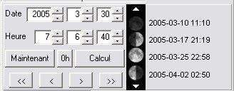
En cliquant sur l'onglet "Ephemerides", la fenêtre du cadre de droite se remplit de données sur la position de la Lune dans le ciel et sur son orbite. Cette position peut se régler en entrant quelques paramètres. On peut aussi faire évoluer en continu le déroulement du temps grâce aux boutons «magnétoscope».
SAISIE DE LA DATE ET L'HEURE :
La date et l'heure de l'observation peuventêtre réglées grâce aux cases supérieures, soit en cliquant, puis en rentrant directement les valeurs dans les cases, soit en cliquant sur les boutons de flèches d'incrémentation ou de décrémentation. Le bouton "Calcul" lance l'affichage correspondant.
Le bouton "Maintenant" permet de montrer directement la Lune telle qu'elle est au moment de l'utilisation du logiciel. La date et l'heure sont celles gérées par le système d'exploitation de votre ordinateur. Pensez à vérifier dans celui-ci si elles sont "à l'heure". Ce bouton est pratique lorsqu'on utilise le logiciel sur le terrain, à l'oculaire.
Le bouton "0h" permet de montrer la Lune telle qu'elle sera à 0 heure la date affichée.
BOUTONS "MAGNÉTOSCOPE" :
Les boutons "Magnétoscope" constituent un moyen très puissant de prévision de l'aspect réel de la Lune. Ils sont surtout utiles dans l'option "Affichage Open GL" en 3D avec les coches "Phase" et "Libration" activées.
Les boutons << et >> permettent de reculer ou d'avancer la date d'une journée, alors que les boutons < et > font avancer ou reculer l'heure d'une heure.
Ces boutons permettent ainsi de voir l'évolution de la phase et de la libration au cours du temps et permettent de prédire les meilleures périodes d'observation des formations situées dans la zone des librations.
Il est possible de visualiser en continu le défilement des phases et des librations comme une vidéo, en restant cliqué sur les boutons "<<" ou ">>".
"CALENDRIER DES PHASES" :
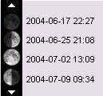
C'est un outil pour vous aider à préparer vos séances d'observation. Cette partie du cadre vous montre un calendrier avec les 4 phases lunaires. Mais avec les flèches blanches, vous pouvez naviguer dans la liste et retrouver des dates de phases futures ou passées.

La fenêtre du cadre de droite se remplit de
données sur la position de la Lune :
Date et
Heure
Ascension droite
Déclinaison
Distance
Diamètre
apparent
Colongitude
Angle de phase
Jour de la
lunaison
Pourcentage d'illumination
Inclinaison
solaire
Libration en latitude
Libration en longitude
Angle
de position de la libration maximale
Les informations suivantes ne sont pas affichées si vous avez coché la case "Coordonnées géocentriques" dans l'onglet "Général" du menu "Configuration" :
Heure du lever de la Lune
Heure du transit au
méridien
Heure du coucher de la Lune
Azimut du
lever
Azimut du coucher
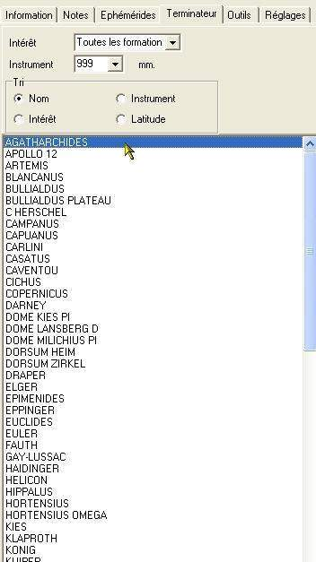
Cette option vous permet de lister dans la fenêtre de droite les formations visibles le long du terminateur pour l'heure et la date choisies dans l'onglet "Ephémérides". De plus, il vous est possible d'extraire et de trier ces formations selon certains critères.
LISTE DEROULANTE "INTÉRÊT" :
Vous pouvez choisir dans la liste déroulante
"Intérêt", un filtre à
appliquer afin de limiter votre choix. Vous pouvez opter pour :
-
Toutes les formations (Pas de filtre)
- Les formations assez
intéressantes
- Les formations très
intéressantes
- Les formations exceptionnelles (Les
grandes vedettes)
LISTE DEROULANTE "INSTRUMENT" :
Un second filtre vous permet de ne lister que les formations visibles dans un instrument donné (Voir "Instruments utiles") que vous pouvez choisir dans la liste déroulante. "999 mm" correspond au diamètre maximal (Pas de filtre appliqué).
Vous pourrez vous rendre compte que la majorité des formations sont déjà observables dans un instrument de 100 mm de diamètre.
CASES A COCHER "TRI" :
Les cases à cocher "tri" vous permettent de choisir le mode de présentation de la liste des formations extraites :
- Nom :
En activant cette coche, les formations extraites seront classées par ordre alphabétique de nom officiel.
- Latitude :
En activant cette coche, les formations extraites seront classées par latitude décroissante, du Nord du terminateur au Sud.
- Intérêt :
En activant cette coche, les formations extraites seront classées par intérêt.
- Instrument :
En activant cette coche, les formations extraites seront classées en fonction de l'instrument nécessaire pour les apercevoir.

C'est dans cet onglet que vous allez pouvoir rentrer toutes vos notes rédigées après observation à l'oculaire de la formation affichée. Chaque formation a ainsi sa "feuille de notes" qui attend vos commentaires. Ceux-ci sont stockés dans une base spéciale et personnelle.
Le bouton "Mise à jour" vous permet de rentrer les informations que vous venez de saisir dans la base. N'oubliez pas de le presser sinon vos nouveaux commentaires seront perdus.
C'est dans cet onglet que vous allez pouvoir choisir l'orientation de la carte, disposer d'un outil de mesure des distances, régler les paramètres de satellisation virtuelle et commander votre monture "Goto".
Onglet "Outils" en mode "Rotation"

BOUTON "Mode normal / Mesure de distance" :
Ce bouton change le mode d'action du curseur sur la carte. C'est un bouton à bascule. Son intitulé change pour vous permettre de revenir dans l'autre mode.
"Mode normal"
En mode normal, le curseur prend la forme d'un réticule rond et sert à désigner les formations à sélectionner.
"Mesure de distance"
En mode "Mesure de distance", le curseur prend une autre forme de réticule et sert d'outil pour mesurer des distances entre frormations lunaires ou pour mesurer les dimensions d'une formation choisie.
Amenez le curseur sur le début de la mesure de distance. Clicquez sur le bouton gauche et laissez le enfoncé. Déplacez la souris. Une ligne de couleur ayant son origine au premier point apparaît. Il vous reste à vous rendre à la fin de votre mesure de distance en bougeant la souris. Arrivé là, lâchez le bouton gauche. La ligne reste visible.
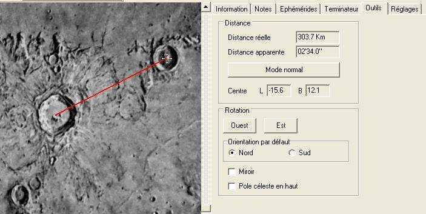
En haut de la fenêtre "Outils", une case vous indique la longueur de la ligne tracée en km et en minutes d'arc. Elle tient compte de la forme sphérique de la surface. Au bord du limbe, deux lignes perpendiculaires de même longueur apparente n'ont donc pas la même dimension sur le globe lunaire.
ROTATION DE LA CARTE
Vous pouvez faire tourner la carte afin de l'orienter de telle façon qu'elle soit rigoureusement identique à la vue obtenue à l'oculaire d'un télescope de type Newton.

Carte orientée avec le pôle Nord en bas.
En cochant la case "Vers l'Est" ou la case "Vers l'Ouest", vous choisissez le sens de rotation.
IMAGE "Miroir"
En cochant cette case, l'image de la Lune sera celle que vous pourriez observer en plaçant un miroir sur le côté et en regardant dedans. Elle correspond à la vue que vous aurez en observant la Lune dans un instrument muni d'un "renvoi coudé", tel que lunette astronomique, télescope de Cassegrain, de Schmidt-Cassegrain, de Maksutov...
Carte orientée avec le pôle Nord en haut et l'Est à gauche
CADRE "Télescope"
Ce cadre vous permet de régler votre monture "Goto".
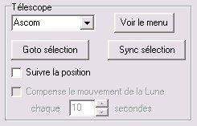
Si vous possédez une telle monture informatisée qui accepte notamment le protocole ASCOM, l'Atlas Virtuel de la Lune va vous positionner directement sur les formations de la Lune que vous recherchez.
Choisissez le protocole que vous voulez utiliser dans la liste déroulante en haut à gauche du cadre. ASCOM est conseillé car il permet un accès simultané par l'Atlas Virtuel de la Lune et par le programme de planétarium (tant que ceux-ci ne donnent pas des ordres contradictoires). Veillez a installer la dernière version des drivers ASCOM depuis
Il faut commencer par initialiser le télescope comme habituellement.
Connectez votre monture à l'ordinateur.
Démarrez votre ordinateur et les versions "Expert" ou "Basic"
Puis utiliser la raquette ou un programme de planétarium pour pointer la Lune.
Cliquez sur le bouton « Voir le menu » et lancez la connexion.
Commencez par centrer une formation bien reconnaissable dans l'oculaire, et sélectionnez là sur la carte. Appuyez sur « Sync sélection » pour initialiser les coordonnées du télescope à cette position. Il est également possible de faire cette opération sur une étoile proche de la Lune avec le programme de planétarium.
Cochez ensuite « Suivre la position » pour que la carte affiche toujours la position du télescope.
Si votre télescope est capable d'un pointage automatique vous pouvez maintenant cliquer sur une formation sur la carte, ou la choisir avec la fonction « Recherche » de l'onglet "Information", puis cliquer sur le bouton « Goto sélection ».
CADRE "Satellisation"
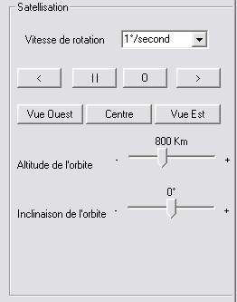
Ce cadre vous permet de simuler la vue depuis un vaisseau spatial en orbite autour de la Lune.
Choisissez la vitesse de rotation dans la liste déroulante.
Les boutons "<" et ">" vous permettent de choisir le sens de rotation.
Le bouton " II " vous permet d'arrêter la rotation.
Les boutons "Vue Est", "Centre" et "Vue Ouest" vous permettent de vous positionner à l'équateur sur le limbe Est ou Ouest ou au centre de disque lunaire.
Le curseur «Altitude» vous permet de choisir l'altitude de votre orbite entre 100 et 800 km.
Le curseur «Inclinaison» vous permet de choisir l'inclinaison de votre orbite entre 0 et 90° par rapport à l'équateur lunaire..
En jouant avec les ascenseurs de la fenêtre, vous pouvez vous déplacer parallèlement ou perpendiculairement à l'équateur.
L'affichage des noms de formations n'a lieu que si la rotation est arrêtée.

Ci-dessus : Simulation du lever de Copernicus
C'est dans cet onglet que vous allez pouvoir choisir les réglages spécifiques à l'affichage 3D.

CURSEUR "PÉNOMBRE" :
Ce curseur fixe le degré de transparence de la partie nocturne du globe lunaire lorsque la coche "Montrer la Phase" est activée dans l'onglet "Affichage" du menu "Configuration" . Il est conseillé de choisir un réglage intermédiaire donnant une impression de "Lumière cendrée" pour la visualisation de la phase globale. En réglant le curseur complètement à gauche, la partie nocturne devient complétement obscure. Par contre, si vous souhaitez utiliser le logiciel comme atlas, il vous est conseillé, soit de désactiver la coche "Phase", soit de régler le présent curseur vers la droite pour assurer une transparence maximale.
Ce curseur sert à régler l'aspect général de la carte.
CURSEUR "DIRECT" :
Ce curseur sert à gérer la largeur de la zone de transition entre la partie éclairé et la partie nocturne. Complètement à gauche, cette largeur est minimale. A droite, la transition est maximale, mais peu réaliste. Il vous est conseiller d'adopter un réglage intermédiaire.
Attention, le logiciel utilisant une texture 2D de la surface de la Lune appliquée avec Open GL sur une sphère 3D, il ne génère pas la forme des ombres portées par les formations sur le terminateur.
CURSEUR "RÉSOLUTION" :
Ce curseur sert à gérer la précision de la sphère 3D sur laquelle est appliquée la texture de surface. Placé totalement à gauche, ce n'est même plus une sphère, mais un polyèdre à facettes.
En déplaçant le curseur vers la droite, vous augmentez le nombre de ces facettes, mais ce réglage devient aussi de plus en plus gourmand en ressources matérielles.
Un indicateur du nombre d'images par seconde (fps) vous donne une idée de la performance atteinte par votre configuration. Il vous est conseillé de ne pas descendre au dessous de 4 fps pour garder un affichage suffisamment rapide dans le maniement de la carte.
Il vaut mieux néanmoins aller vers une résolution sphérique plus grande car cela influe (légèrement) sur la précision du pointage des formations sur la carte 3D.
Ce bouton affiche une fenêtre donnant des informations sur votre carte graphique. Utilisez le pour savoir quelles options sont disponible avec votre matériel ainsi que pour contrôler qu'il fonctionne correctement.
Comme indiqué le fait de changer une de ces options ne sera prise en compte qu'au prochain lancement du programme.
"Compression des textures" :
Il
faut normallement laisser cette option cochée pour éviter
un clignotement de l'image. L'enlever peut améliorer les
performances sur certain modèles de cartes graphiques.
"Antialias" :
Essayez cette option en cas d'effets d'échelle
dans l'image. Peut améliorer les performances avec certaines
cartes graphique mais aussi fortement les dégrader avec
d'autres modèles.
LA BARRE D'ETAT (Toutes versions)
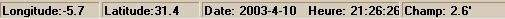
AFFICHAGE DES COORDONNÉES :
La latitude et la longitude du point sur lequel se trouve le centre du curseur s'affichent dans la barre des menus à droite. Attention de ne pas les confondre avec les coordonnées du site d'observation !
AFFICHAGE DE LA DATE ET DE L'HEURE :
La date et l'heure correspondant à la carte affichée est inscrite dans la barre d'état. Attention à ne pas la confondre avec la date et l'heure de votre système !
AFFICHAGE DU CHAMP VISUALISE :
La largeur du champ réel visualisé dans la fenêtre "Carte" est indiquée en minutes d'arc.
FIN DU MANUEL DU MODULE "ATLUN" (c)
Les auteurs remercient les utilisateurs de bien vouloir leur signaler toute erreur trouvée dans ce manuel par le biais du forum du site Internet.
Copyright Christian Legrand & Patrick Chevalley / 2009